Chapter 4: States of Consciousness¶
Introduction¶
Our lives involve regular, dramatic changes in the degree to which we are aware of our surroundings and our internal states. While awake, we feel alert and aware of the many important things going on around us. Our experiences change dramatically while we are in deep sleep and once again when we are dreaming. Some people also experience altered states of consciousness through meditation, hypnosis, or alcohol and other drugs.
This chapter will discuss states of consciousness with a particular emphasis on sleep. The different stages of sleep will be identified, and sleep disorders will be described. The chapter will close with discussions of altered states of consciousness produced by psychoactive drugs, hypnosis, and meditation.
4.1 What Is Consciousness?¶
Learning Objectives
By the end of this section, you will be able to:
- Understand what is meant by consciousness
- Explain how circadian rhythms are involved in regulating the sleep-wake cycle, and how circadian cycles can be disrupted
- Discuss the concept of sleep debt
Consciousness describes our awareness of internal and external stimuli. Awareness of internal stimuli includes feeling pain, hunger, thirst, sleepiness, and being aware of our thoughts and emotions. Awareness of external stimuli includes experiences such as seeing the light from the sun, feeling the warmth of a room, and hearing the voice of a friend.
We experience different states of consciousness and different levels of awareness on a regular basis. We might even describe consciousness as a continuum that ranges from full awareness to a deep sleep. Sleep is a state marked by relatively low levels of physical activity and reduced sensory awareness that is distinct from periods of rest that occur during wakefulness. Wakefulness is characterized by high levels of sensory awareness, thought, and behavior. Beyond being awake or asleep, there are many other states of consciousness people experience. These include daydreaming, intoxication, and unconsciousness due to anesthesia. Often, we are not completely aware of our surroundings, even when we are fully awake. For instance, have you ever daydreamed while driving home from work or school without really thinking about the drive itself? You were capable of engaging in all of the complex tasks involved with operating a motor vehicle even though you were not aware of doing so. Many of these processes, like much of psychological behavior, are rooted in our biology.
Biological Rhythms¶
Biological rhythms are internal rhythms of biological activity. A woman’s menstrual cycle is an example of a biological rhythm—a recurring, cyclical pattern of bodily changes. One complete menstrual cycle takes about 28 days—a lunar month—but many biological cycles are much shorter. For example, body temperature fluctuates cyclically over a 24-hour period (Figure 4.2). Alertness is associated with higher body temperatures, and sleepiness with lower body temperatures.
![A line graph is titled “Circadian Change in Body Temperature (Source: Waterhouse et al., 2012).” The y-axis, is labeled “temperature (degrees Fahrenheit),” ranges from 97.2 to 99.3. The x-axis, which is labeled “time,” begins at 12:00 A.M. and ends at 4:00 A.M. the following day. The subjects slept from 12:00 A.M. until 8:00 A.M. during which time their average body temperatures dropped from around 98.8 degrees at midnight to 97.6 degrees at 4:00 A.M. and then gradually rose back to nearly the same starting temperature by 8:00 A.M. The average body temperature fluctuated slightly throughout the day with an upward tilt, until the next sleep cycle where the temperature again dropped.](img/cnx-psych-04-01-rhythms.webp)
This pattern of temperature fluctuation, which repeats every day, is one example of a circadian rhythm. A circadian rhythm is a biological rhythm that takes place over a period of about 24 hours. Our sleep-wake cycle, which is linked to our environment’s natural light-dark cycle, is perhaps the most obvious example of a circadian rhythm, but we also have daily fluctuations in heart rate, blood pressure, blood sugar, and body temperature. Some circadian rhythms play a role in changes in our state of consciousness.
If we have biological rhythms, then is there some sort of biological clock? In the brain, the hypothalamus, which lies above the pituitary gland, is a main center of homeostasis. Homeostasis is the tendency to maintain a balance, or optimal level, within a biological system.
The brain’s clock mechanism is located in an area of the hypothalamus known as the suprachiasmatic nucleus (SCN). The axons of light-sensitive neurons in the retina provide information to the SCN based on the amount of light present, allowing this internal clock to be synchronized with the outside world (Klein, Moore, & Reppert, 1991; Welsh, Takahashi, & Kay, 2010) (Figure 4.3).
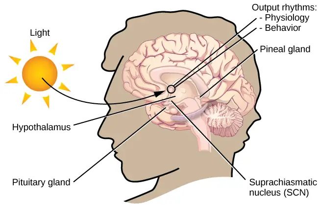
Problems With Circadian Rhythms¶
Generally, and for most people, our circadian cycles are aligned with the outside world. For example, most people sleep during the night and are awake during the day. One important regulator of sleep-wake cycles is the hormone melatonin. The pineal gland, an endocrine structure located inside the brain that releases melatonin, is thought to be involved in the regulation of various biological rhythms and of the immune system during sleep (Hardeland, Pandi-Perumal, & Cardinali, 2006). Melatonin release is stimulated by darkness and inhibited by light.
There are individual differences in regard to our sleep-wake cycle. For instance, some people would say they are morning people, while others would consider themselves to be night owls. These individual differences in circadian patterns of activity are known as a person’s chronotype, and research demonstrates that morning larks and night owls differ with regard to sleep regulation (Taillard, Philip, Coste, Sagaspe, & Bioulac, 2003). Sleep regulation refers to the brain’s control of switching between sleep and wakefulness as well as coordinating this cycle with the outside world.
Link to Learning
Watch this brief video about circadian rhythms and how they affect sleep to learn more.
Disruptions of Normal Sleep¶
Whether lark, owl, or somewhere in between, there are situations in which a person’s circadian clock gets out of synchrony with the external environment. One way that this happens involves traveling across multiple time zones. When we do this, we often experience jet lag. Jet lag is a collection of symptoms that results from the mismatch between our internal circadian cycles and our environment. These symptoms include fatigue, sluggishness, irritability, and insomnia (i.e., a consistent difficulty in falling or staying asleep for at least three nights a week over a month’s time) (Roth, 2007).
Individuals who do rotating shift work are also likely to experience disruptions in circadian cycles. Rotating shift work refers to a work schedule that changes from early to late on a daily or weekly basis. For example, a person may work from 7:00 a.m. to 3:00 p.m. on Monday, 3:00 a.m. to 11:00 a.m. on Tuesday, and 11:00 a.m. to 7:00 p.m. on Wednesday. In such instances, the individual’s schedule changes so frequently that it becomes difficult for a normal circadian rhythm to be maintained. This often results in sleeping problems, and it can lead to signs of depression and anxiety. These kinds of schedules are common for individuals working in health care professions and service industries, and they are associated with persistent feelings of exhaustion and agitation that can make someone more prone to making mistakes on the job (Gold et al., 1992; Presser, 1995).
Rotating shift work has pervasive effects on the lives and experiences of individuals engaged in that kind of work, which is clearly illustrated in stories reported in a qualitative study that researched the experiences of middle-aged nurses who worked rotating shifts (West, Boughton & Byrnes, 2009). Several of the nurses interviewed commented that their work schedules affected their relationships with their family. One of the nurses said,
If you’ve had a partner who does work regular job 9 to 5 office hours . . . the ability to spend time, good time with them when you’re not feeling absolutely exhausted . . . that would be one of the problems that I’ve encountered. (West et al., 2009, p. 114)
While disruptions in circadian rhythms can have negative consequences, there are things we can do to help us realign our biological clocks with the external environment. Some of these approaches, such as using a bright light as shown in Figure 4.4, have been shown to alleviate some of the problems experienced by individuals suffering from jet lag or from the consequences of rotating shift work. Because the biological clock is driven by light, exposure to bright light during working shifts and dark exposure when not working can help combat insomnia and symptoms of anxiety and depression (Huang, Tsai, Chen, & Hsu, 2013).
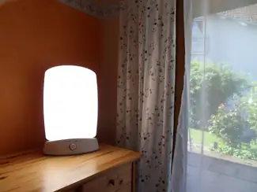
Link to Learning
Watch this video about overcoming jet lag to learn some tips.
Insufficient Sleep¶
When people have difficulty getting sleep due to their work or the demands of day-to-day life, they accumulate a sleep debt. A person with a sleep debt does not get sufficient sleep on a chronic basis. The consequences of sleep debt include decreased levels of alertness and mental efficiency. Interestingly, since the advent of electric light, the amount of sleep that people get has declined. While we certainly welcome the convenience of having the darkness lit up, we also suffer the consequences of reduced amounts of sleep because we are more active during the nighttime hours than our ancestors were. As a result, many of us sleep less than 7–8 hours a night and accrue a sleep debt. While there is tremendous variation in any given individual’s sleep needs, the National Sleep Foundation (n.d.) cites research to estimate that newborns require the most sleep (between 12 and 18 hours a night) and that this amount declines to just 7–9 hours by the time we are adults.
If you lie down to take a nap and fall asleep very easily, chances are you may have sleep debt. Given that college students are notorious for suffering from significant sleep debt (Hicks, Fernandez, & Pellegrini, 2001; Hicks, Johnson, & Pellegrini, 1992; Miller, Shattuck, & Matsangas, 2010), chances are you and your classmates deal with sleep debt-related issues on a regular basis. In 2015, the National Sleep Foundation updated their sleep duration hours, to better accommodate individual differences. Table 4.1 shows the new recommendations, which describe sleep durations that are “recommended”, “may be appropriate”, and “not recommended”.
Table 4.1
| Sleep Needs at Different Ages | |||
|---|---|---|---|
| Age | Recommended | May be appropriate | Not recommended |
| 0–3 months | 14–17 hours | 11–13 hours 18–19 hours |
Fewer than 11 hours More than 19 hours |
| 4–11 months | 12–15 hours | 10–11 hours 16–18 hours |
Fewer than 10 hours More than 18 hours |
| 1–2 years | 11–14 hours | 9–10 hours 15–16 hours |
Fewer than 9 hours More than 16 hours |
| 3–5 years | 10–13 hours | 8–9 hours 14 hours |
Fewer than 8 hours More than 14 hours |
| 6–13 years | 9–11 hours | 7–8 hours 12 hours |
Fewer than 7 hours More than 12 hours |
| 14–17 years | 8–10 hours | 7 hours 11 hours |
Fewer than 7 hours More than 11 hours |
| 18–25 years | 7–9 hours | 6 hours 10–11 hours |
Fewer than 6 hours More than 11 hours |
| 26–64 years | 7–9 hours | 6 hours 10 hours |
Fewer than 6 hours More than 10 hours |
| ≥65 years | 7–8 hours | 5–6 hours 9 hours |
Fewer than 5 hours More than 9 hours |
Sleep debt and sleep deprivation have significant negative psychological and physiological consequences Figure 4.5. As mentioned earlier, lack of sleep can result in decreased mental alertness and cognitive function. In addition, sleep deprivation often results in depression-like symptoms. These effects can occur as a function of accumulated sleep debt or in response to more acute periods of sleep deprivation. It may surprise you to know that sleep deprivation is associated with obesity, increased blood pressure, increased levels of stress hormones, and reduced immune functioning (Banks & Dinges, 2007). A sleep deprived individual generally will fall asleep more quickly than if they were not sleep deprived. Some sleep-deprived individuals have difficulty staying awake when they stop moving (example sitting and watching television or driving a car). That is why individuals suffering from sleep deprivation can also put themselves and others at risk when they put themselves behind the wheel of a car or work with dangerous machinery. Some research suggests that sleep deprivation affects cognitive and motor function as much as, if not more than, alcohol intoxication (Williamson & Feyer, 2000). Research shows that the most severe effects of sleep deprivation occur when a person stays awake for more than 24 hours (Killgore & Weber, 2014; Killgore et al., 2007), or following repeated nights with fewer than four hours in bed (Wickens, Hutchins, Lauk, Seebook, 2015). For example, irritability, distractibility, and impairments in cognitive and moral judgment can occur with fewer than four hours of sleep. If someone stays awake for 48 consecutive hours, they could start to hallucinate.
![An illustration of the top half of a human body identifies the locations in the body that correspond with various adverse affects of sleep deprivation. The brain is labeled with “Irritability,” “Cognitive impairment,” “Memory lapses or loss,” “Impaired moral judgment,” “Severe yawning,” “Hallucinations,” and “Symptoms similar to ADHD.” The heart is labeled with “Risk of heart disease.” The muscles are labeled with “Increased reaction time,” “Decreased accuracy,” “Tremors,” and “Aches.” There is an organ near the stomach labeled “Risk of diabetes Type 2.” Various parts of the neck, arm, and underarm are labeled “Impaired immune system.” Other risks include “Growth suppression,” “Risk of obesity,” “Decreased temperature.”](img/cnx-psych-04-01-sleepless.webp)
Link to Learning
Read this article about sleep needs to assess your own sleeping habits.
The amount of sleep we get varies across the lifespan. When we are very young, we spend up to 16 hours a day sleeping. As we grow older, we sleep less. In fact, a meta-analysis, which is a study that combines the results of many related studies, conducted within the last decade indicates that by the time we are 65 years old, we average fewer than 7 hours of sleep per day (Ohayon, Carskadon, Guilleminault, & Vitiello, 2004).
4.2 Sleep and Why We Sleep¶
Learning Objectives
By the end of this section, you will be able to:
- Describe areas of the brain involved in sleep
- Understand hormone secretions associated with sleep
- Describe several theories aimed at explaining the function of sleep
- Name and describe three theories about why we dream
We spend approximately one-third of our lives sleeping. Given the average life expectancy for U.S. citizens falls between 73 and 79 years old (Singh & Siahpush, 2006), we can expect to spend approximately 25 years of our lives sleeping. Some animals never sleep (e.g., some fish and amphibian species); other animals sleep very little without apparent negative consequences (e.g., giraffes); yet some animals (e.g., rats) die after two weeks of sleep deprivation (Siegel, 2008). Why do we devote so much time to sleeping? Is it absolutely essential that we sleep? This section will consider these questions and explore various explanations for why we sleep.
What is Sleep?¶
You have read that sleep is distinguished by low levels of physical activity and reduced sensory awareness. As discussed by Siegel (2008), a definition of sleep must also include mention of the interplay of the circadian and homeostatic mechanisms that regulate sleep. Homeostatic regulation of sleep is evidenced by sleep rebound following sleep deprivation. Sleep rebound refers to the fact that a sleep-deprived individual will fall asleep more quickly during subsequent opportunities for sleep. Sleep is characterized by certain patterns of activity of the brain that can be visualized using electroencephalography (EEG), and different phases of sleep can be differentiated using EEG as well.
Sleep-wake cycles seem to be controlled by multiple brain areas acting in conjunction with one another. Some of these areas include the thalamus, the hypothalamus, and the pons. As already mentioned, the hypothalamus contains the SCN—the biological clock of the body—in addition to other nuclei that, in conjunction with the thalamus, regulate slow-wave sleep. The pons is important for regulating rapid eye movement (REM) sleep (National Institutes of Health, n.d.).
Sleep is also associated with the secretion and regulation of a number of hormones from several endocrine glands including: melatonin, follicle stimulating hormone (FSH), luteinizing hormone (LH), and growth hormone (National Institutes of Health, n.d.). You have read that the pineal gland releases melatonin during sleep (Figure 4.6). Melatonin is thought to be involved in the regulation of various biological rhythms and the immune system (Hardeland et al., 2006). During sleep, the pituitary gland secretes both FSH and LH which are important in regulating the reproductive system (Christensen et al., 2012; Sofikitis et al., 2008). The pituitary gland also secretes growth hormone, during sleep, which plays a role in physical growth and maturation as well as other metabolic processes (Bartke, Sun, & Longo, 2013).
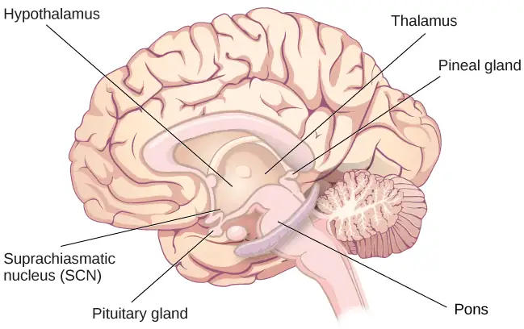
Why Do We Sleep?¶
Given the central role that sleep plays in our lives and the number of adverse consequences that have been associated with sleep deprivation, one would think that we would have a clear understanding of why it is that we sleep. Unfortunately, this is not the case; however, several hypotheses have been proposed to explain the function of sleep.
Adaptive Function of Sleep¶
One popular hypothesis of sleep incorporates the perspective of evolutionary psychology. Evolutionary psychology is a discipline that studies how universal patterns of behavior and cognitive processes have evolved over time as a result of natural selection. Variations and adaptations in cognition and behavior make individuals more or less successful in reproducing and passing their genes to their offspring. One hypothesis from this perspective might argue that sleep is essential to restore resources that are expended during the day. Just as bears hibernate in the winter when resources are scarce, perhaps people sleep at night to reduce their energy expenditures. While this is an intuitive explanation of sleep, there is little research that supports this explanation. In fact, it has been suggested that there is no reason to think that energetic demands could not be addressed with periods of rest and inactivity (Frank, 2006; Rial et al., 2007), and some research has actually found a negative correlation between energetic demands and the amount of time spent sleeping (Capellini, Barton, McNamara, Preston, & Nunn, 2008).
Another evolutionary hypothesis of sleep holds that our sleep patterns evolved as an adaptive response to predatory risks, which increase in darkness. Thus we sleep in safe areas to reduce the chance of harm. Again, this is an intuitive and appealing explanation for why we sleep. Perhaps our ancestors spent extended periods of time asleep to reduce attention to themselves from potential predators. Comparative research indicates, however, that the relationship that exists between predatory risk and sleep is very complex and equivocal. Some research suggests that species that face higher predatory risks sleep fewer hours than other species (Capellini et al., 2008), while other researchers suggest there is no relationship between the amount of time a given species spends in deep sleep and its predation risk (Lesku, Roth, Amlaner, & Lima, 2006).
It is quite possible that sleep serves no single universally adaptive function, and different species have evolved different patterns of sleep in response to their unique evolutionary pressures. While we have discussed the negative outcomes associated with sleep deprivation, it should be pointed out that there are many benefits that are associated with adequate amounts of sleep. A few such benefits listed by the National Sleep Foundation (n.d.) include maintaining health, lowering stress levels, improving mood, and increasing motor coordination, as well as a number of benefits related to cognition and memory formation.
Cognitive Function of Sleep¶
Another theory regarding why we sleep involves sleep’s importance for cognitive function and memory formation (Rattenborg, Lesku, Martinez-Gonzalez, & Lima, 2007). Indeed, we know sleep deprivation results in disruptions in cognition and memory deficits (Brown, 2012), leading to impairments in our abilities to maintain attention, make decisions, and recall long-term memories. Moreover, these impairments become more severe as the amount of sleep deprivation increases (Alhola & Polo-Kantola, 2007). Furthermore, slow-wave sleep after learning a new task can improve resultant performance on that task (Huber, Ghilardi, Massimini, & Tononi, 2004) and seems essential for effective memory formation (Stickgold, 2005). Understanding the impact of sleep on cognitive function should help you understand that cramming all night for a test may not be effective and can even prove counterproductive.
Link to Learning
Watch this brief video that gives sleep tips for college students to learn more.
Getting the optimal amount of sleep has also been associated with other cognitive benefits. Research indicates that included among these possible benefits are increased capacities for creative thinking (Cai, Mednick, Harrison, Kanady, & Mednick, 2009; Wagner, Gais, Haider, Verleger, & Born, 2004), language learning (Fenn, Nusbaum, & Margoliash, 2003; Gómez, Bootzin, & Nadel, 2006), and inferential judgments (Ellenbogen, Hu, Payne, Titone, & Walker, 2007). It is possible that even the processing of emotional information is influenced by certain aspects of sleep (Walker, 2009).
Link to Learning
Watch this brief video about the relationship between sleep and memory to learn more.
4.3 Stages of Sleep¶
Learning Objectives
By the end of this section, you will be able to:
- Differentiate between REM and non-REM sleep
- Describe the differences between the three stages of non-REM sleep
- Understand the role that REM and non-REM sleep play in learning and memory
Sleep is not a uniform state of being. Instead, sleep is composed of several different stages that can be differentiated from one another by the patterns of brain wave activity that occur during each stage. While awake, our brain wave activity is dominated by beta waves. As compared to the brain wave patterns while asleep, beta waves have the highest frequency (13–30 Hz) and lowest amplitude, and they tend to show more variability. As we begin to fall asleep, our brain wave activity changes. These changes can be visualized using an EEG and are distinguished from one another by both the frequency and amplitude of the brain wave. The frequency of a brain wave is how many brain waves occur in a second, and frequency is measured in Hertz (Hz). Amplitude is the height of the brain wave (Figure 4.7). Sleep can be divided into two different general phases: REM sleep and non-REM (NREM) sleep. Rapid eye movement (REM) sleep is characterized by darting movements of the eyes under closed eyelids. Brain waves during REM sleep appear very similar to brain waves during wakefulness. In contrast, non-REM (NREM) sleep is subdivided into three stages distinguished from each other and from wakefulness by characteristic patterns of brain waves. The first three stages of sleep are NREM sleep, typically followed by REM sleep. In this section, we will discuss each of these stages of sleep and their associated patterns of brain wave activity.
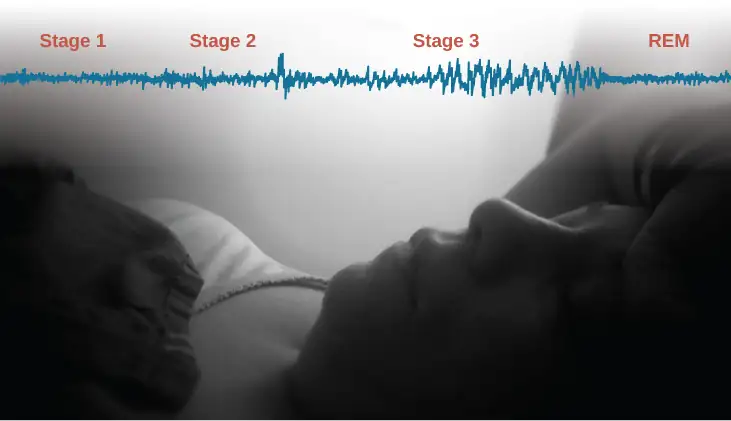
NREM Stages of Sleep¶
As we begin to fall asleep, we enter NREM sleep, and brain wave patterns decrease in frequency and increase in amplitude. The first stage of NREM sleep is known as stage 1 sleep. Stage 1 sleep is a transitional phase that occurs between wakefulness and sleep, the period during which we drift off to sleep. During this time, there is a slowdown in both the rates of respiration and heartbeat. In addition, stage 1 sleep involves a marked decrease in both overall muscle tension and core body temperature.
In terms of brain wave activity, stage 1 sleep is associated with both alpha and theta waves. The early portion of stage 1 sleep produces alpha waves. These patterns of electrical activity (waves) resemble that of someone who is very relaxed, yet awake, but they have less variability (are more synchronized) and are relatively lower in frequency (8–12 Hz) and higher in amplitude than beta waves (Figure 4.8). As an individual continues through stage 1 sleep, there is an increase in theta wave activity. Theta waves are even lower frequency (4–7 Hz), and higher in amplitude, than the alpha wave patterns. It is relatively easy to wake someone from stage 1 sleep; in fact, people often report that they have not been asleep if they are awoken during stage 1 sleep.
![A graph has a y-axis labeled “EEG” and an x-axis labeled “time (seconds.) Plotted along the y-axis and moving upward are the stages of sleep. First is REM, followed by Stage 3 NREM Delta, Stage 2 NREM Theta (sleep spindles; K-complexes), Stage 1 NREM Alpha, and Awake. Charted on the x axis is Time in seconds from 2–20 in 2 second intervals. Each sleep stage has associated wavelengths of varying amplitude and frequency. Relative to the others, “awake” has a very close wavelength and a medium amplitude. Stage 1 is characterized by a generally uniform wavelength and a relatively low amplitude which doubles and quickly reverts to normal every 2 seconds. Stage 2 is comprised of a similar wavelength as stage 1. It introduces the K-complex from seconds 10 through 12 which is a short burst of doubled or tripled amplitude and decreased wavelength. Stage 3 has a more uniform wave with gradually increasing amplitude. Finally, REM sleep looks much like stage 2 without the K-complex.](img/cnx-psych-04-03-stages.webp)
As we move into stage 2 sleep, the body goes into a state of deep relaxation. Theta waves still dominate the activity of the brain, but they are interrupted by brief bursts of activity known as sleep spindles (Figure 4.9). A sleep spindle is a rapid burst of higher frequency brain waves that may be important for learning and memory (Fogel & Smith, 2011; Poe, Walsh, & Bjorness, 2010). In addition, the appearance of K-complexes is often associated with stage 2 sleep. A K-complex is a very high amplitude pattern of brain activity that may in some cases occur in response to environmental stimuli. Thus, K-complexes might serve as a bridge to higher levels of arousal in response to what is going on in our environments (Halász, 1993; Steriade & Amzica, 1998).
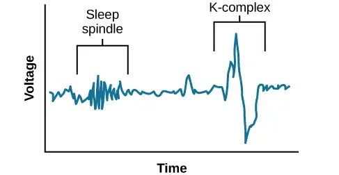
NREM stage 3 sleep is often referred to as deep sleep or slow-wave sleep because this stage is characterized by low frequency (less than 3 Hz), high amplitude delta waves (Figure 4.10). These delta waves have the lowest frequency and highest amplitude of our sleeping brain wave patterns. During this time, an individual’s heart rate and respiration slow dramatically, and it is much more difficult to awaken someone from sleep during stage 3 than during earlier stages. Interestingly, individuals who have increased levels of alpha brain wave activity (more often associated with wakefulness and transition into stage 1 sleep) during stage 3 often report that they do not feel refreshed upon waking, regardless of how long they slept (Stone, Taylor, McCrae, Kalsekar, & Lichstein, 2008).
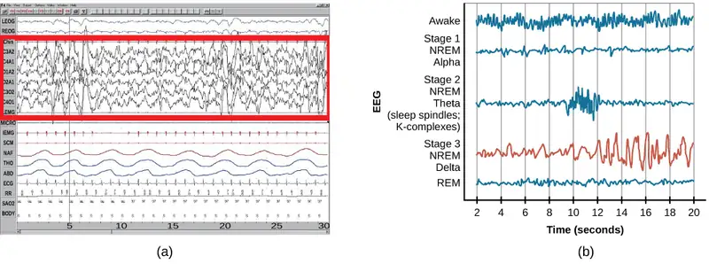
REM Sleep¶
As mentioned earlier, REM sleep is marked by rapid movements of the eyes. The brain waves associated with this stage of sleep are very similar to those observed when a person is awake, as shown in Figure 4.11, and this is the period of sleep in which dreaming occurs. It is also associated with paralysis of muscle systems in the body with the exception of those that make circulation and respiration possible. Therefore, no movement of voluntary muscles occurs during REM sleep in a normal individual; REM sleep is often referred to as paradoxical sleep because of this combination of high brain activity and lack of muscle tone. Like NREM sleep, REM has been implicated in various aspects of learning and memory (Wagner, Gais, & Born, 2001; Siegel, 2001).
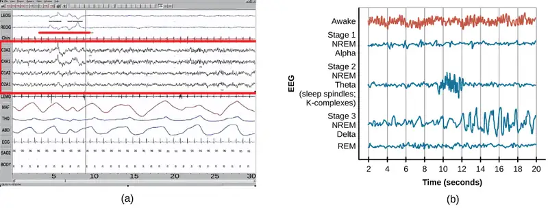
If people are deprived of REM sleep and then allowed to sleep without disturbance, they will spend more time in REM sleep in what would appear to be an effort to recoup the lost time in REM. This is known as the REM rebound, and it suggests that REM sleep is also homeostatically regulated. Aside from the role that REM sleep may play in processes related to learning and memory, REM sleep may also be involved in emotional processing and regulation. In such instances, REM rebound may actually represent an adaptive response to stress in nondepressed individuals by suppressing the emotional salience of aversive events that occurred in wakefulness (Suchecki, Tiba, & Machado, 2012). Sleep deprivation in general is associated with a number of negative consequences (Brown, 2012).
The hypnogram below (Figure 4.12) shows a person’s passage through the stages of sleep.
![This is a hypnogram showing the transitions of the sleep cycle during a typical eight hour period of sleep. During the first hour, the person goes through stages 1 and 2 and ends at 3. In the second hour, sleep oscillates in stage 3 before attaining a 30-minute period of REM sleep. The third hour follows the same pattern as the second, but ends with a brief awake period. The fourth hour follows a similar pattern as the third, with a slightly longer REM stage. In the fifth hour, stage 3 is no longer reached. The sleep stages are fluctuating from 2, to 1, to REM, to awake, and then they repeat with shortening intervals until the end of the eighth hour when the person awakens.](img/cnx-psych-04-03-hypnogram.webp)
Link to Learning
View this video about sleep stages to learn more.
Dreams¶
Dreams and their associated meanings vary across different cultures and periods of time. By the late 19th century, Austrian psychiatrist Sigmund Freud had become convinced that dreams represented an opportunity to gain access to the unconscious. By analyzing dreams, Freud thought people could increase self-awareness and gain valuable insight to help them deal with the problems they faced in their lives. Freud made distinctions between the manifest content and the latent content of dreams. Manifest content is the actual content, or storyline, of a dream. Latent content, on the other hand, refers to the hidden meaning of a dream. For instance, if a woman dreams about being chased by a snake, Freud might have argued that this represents the woman’s fear of sexual intimacy, with the snake serving as a symbol of a man’s penis.
Freud was not the only theorist to focus on the content of dreams. The 20th century Swiss psychiatrist Carl Jung believed that dreams allowed us to tap into the collective unconscious. The collective unconscious, as described by Jung, is a theoretical repository of information he believed to be shared by everyone. According to Jung, certain symbols in dreams reflected universal archetypes with meanings that are similar for all people regardless of culture or location.
The sleep and dreaming researcher Rosalind Cartwright, however, believes that dreams simply reflect life events that are important to the dreamer. Unlike Freud and Jung, Cartwright’s ideas about dreaming have found empirical support. For example, she and her colleagues published a study in which women going through divorce were asked several times over a five month period to report the degree to which their former spouses were on their minds. These same women were awakened during REM sleep in order to provide a detailed account of their dream content. There was a significant positive correlation between the degree to which women thought about their former spouses during waking hours and the number of times their former spouses appeared as characters in their dreams (Cartwright, Agargun, Kirkby, & Friedman, 2006). Recent research (Horikawa, Tamaki, Miyawaki, & Kamitani, 2013) has uncovered new techniques by which researchers may effectively detect and classify the visual images that occur during dreaming by using fMRI for neural measurement of brain activity patterns, opening the way for additional research in this area.
Alan Hobson, a neuroscientist, is credited for developing activation-synthesis theory of dreaming. Early versions of this theory proposed that dreams were not the meaning-filled representations of angst proposed by Freud and others, but were rather the result of our brain attempting to make sense of ("synthesize") the neural activity ("activation") that was happening during REM sleep. Recent adaptations (e.g., Hobson, 2002) continue to update the theory based on accumulating evidence. For example, Hobson (2009) suggests that dreaming may represent a state of protoconsciousness. In other words, dreaming involves constructing a virtual reality in our heads that we might use to help us during wakefulness. Among a variety of neurobiological evidence, John Hobson cites research on lucid dreams as an opportunity to better understand dreaming in general. Lucid dreams are dreams in which certain aspects of wakefulness are maintained during a dream state. In a lucid dream, a person becomes aware of the fact that they are dreaming, and as such, they can control the dream’s content (LaBerge, 1990).
4.4 Sleep Problems and Disorders¶
Learning Objectives
By the end of this section, you will be able to:
- Describe the symptoms and treatments of insomnia
- Recognize the symptoms of several parasomnias
- Describe the symptoms and treatments for sleep apnea
- Recognize risk factors associated with sudden infant death syndrome (SIDS) and steps to prevent it
- Describe the symptoms and treatments for narcolepsy
Many people experience disturbances in their sleep at some point in their lives. Depending on the population and sleep disorder being studied, between 30% and 50% of the population suffers from a sleep disorder at some point in their lives (Bixler, Kales, Soldatos, Kaels, & Healey, 1979; Hossain & Shapiro, 2002; Ohayon, 1997, 2002; Ohayon & Roth, 2002). This section will describe several sleep disorders as well as some of their treatment options.
Insomnia¶
Insomnia, a consistent difficulty in falling or staying asleep, is the most common of the sleep disorders. Individuals with insomnia often experience long delays between the times that they go to bed and actually fall asleep. In addition, these individuals may wake up several times during the night only to find that they have difficulty getting back to sleep. As mentioned earlier, one of the criteria for insomnia involves experiencing these symptoms for at least three nights a week for at least one month’s time (Roth, 2007).
It is not uncommon for people suffering from insomnia to experience increased levels of anxiety about their inability to fall asleep. This becomes a self-perpetuating cycle because increased anxiety leads to increased arousal, and higher levels of arousal make the prospect of falling asleep even more unlikely. Chronic insomnia is almost always associated with feeling overtired and may be associated with symptoms of depression.
There may be many factors that contribute to insomnia, including age, drug use, exercise, mental status, and bedtime routines. Not surprisingly, insomnia treatment may take one of several different approaches. People who suffer from insomnia might limit their use of stimulant drugs (such as caffeine) or increase their amount of physical exercise during the day. Some people might turn to over-the-counter (OTC) or prescribed sleep medications to help them sleep, but this should be done sparingly because many sleep medications result in dependence and alter the nature of the sleep cycle, and they can increase insomnia over time. Those who continue to have insomnia, particularly if it affects their quality of life, should seek professional treatment.
Some forms of psychotherapy, such as cognitive-behavioral therapy, can help sufferers of insomnia. Cognitive-behavioral therapy is a type of psychotherapy that focuses on cognitive processes and problem behaviors. The treatment of insomnia likely would include stress management techniques and changes in problematic behaviors that could contribute to insomnia (e.g., spending more waking time in bed). Cognitive-behavioral therapy has been demonstrated to be quite effective in treating insomnia (Savard, Simard, Ivers, & Morin, 2005; Williams, Roth, Vatthauer, & McCrae, 2013).
Everyday Connection: Solutions to Support Healthy Sleep
Has something like this ever happened to you? My sophomore college housemate got so stressed out during finals sophomore year he drank almost a whole bottle of Nyquil to try to fall asleep. When he told me, I made him go see the college therapist.
Many college students struggle getting the recommended 7–9 hours of sleep each night. However, for some, it's not because of all-night partying or late-night study sessions. It's simply that they feel so overwhelmed and stressed that they cannot fall asleep or stay asleep. One or two nights of sleep difficulty is not unusual, but if you experience anything more than that, you should seek a doctor's advice.
Here are some tips to maintain healthy sleep:
- Stick to a sleep schedule, even on the weekends. Try going to bed and waking up at the same time every day to keep your biological clock in sync so your body gets in the habit of sleeping every night.
- Avoid anything stimulating for an hour before bed. That includes exercise and bright light from devices.
- Exercise daily.
- Avoid naps.
- Keep your bedroom temperature between 60 and 67 degrees. People sleep better in cooler temperatures.
- Avoid alcohol, cigarettes, caffeine, and heavy meals before bed. It may feel like alcohol helps you sleep, but it actually disrupts REM sleep and leads to frequent awakenings. Heavy meals may make you sleepy, but they can also lead to frequent awakenings due to gastric distress.
- If you cannot fall asleep, leave your bed and do something else until you feel tired again. Train your body to associate the bed with sleeping rather than other activities like studying, eating, or watching television shows.
Parasomnias¶
A parasomnia is one of a group of sleep disorders in which unwanted, disruptive motor activity and/or experiences during sleep play a role. Parasomnias can occur in either REM or NREM phases of sleep. Sleepwalking, restless leg syndrome, and night terrors are all examples of parasomnias (Mahowald & Schenck, 2000).
Sleepwalking¶
In sleepwalking, or somnambulism, the sleeper engages in relatively complex behaviors ranging from wandering about to driving an automobile. During periods of sleepwalking, sleepers often have their eyes open, but they are not responsive to attempts to communicate with them. Sleepwalking most often occurs during slow-wave sleep, but it can occur at any time during a sleep period in some affected individuals (Mahowald & Schenck, 2000).
Historically, somnambulism has been treated with a variety of pharmacotherapies ranging from benzodiazepines to antidepressants. However, the success rate of such treatments is questionable. Guilleminault et al. (2005) found that sleepwalking was not alleviated with the use of benzodiazepines. However, all of their somnambulistic patients who also suffered from sleep-related breathing problems showed a marked decrease in sleepwalking when their breathing problems were effectively treated.
Dig Deeper: A Sleepwalking Defense?
On January 16, 1997, Scott Falater sat down to dinner with his wife and children and told them about difficulties he was experiencing on a project at work. After dinner, he prepared some materials to use in leading a church youth group the following morning, and then he attempted to repair the family’s swimming pool pump before retiring to bed. The following morning, he awoke to barking dogs and unfamiliar voices from downstairs. As he went to investigate what was going on, he was met by a group of police officers who arrested him for the murder of his wife (Cartwright, 2004; CNN, 1999).
Yarmila Falater’s body was found in the family’s pool with 44 stab wounds. A neighbor called the police after witnessing Falater standing over his wife’s body before dragging her into the pool. Upon a search of the premises, police found blood-stained clothes and a bloody knife in the trunk of Falater’s car, and he had blood stains on his neck.
Remarkably, Falater insisted that he had no recollection of hurting his wife in any way. His children and his wife’s parents all agreed that Falater had an excellent relationship with his wife and they couldn’t think of a reason that would provide any sort of motive to murder her (Cartwright, 2004).
Scott Falater had a history of regular episodes of sleepwalking as a child, and he had even behaved violently toward his sister once when she tried to prevent him from leaving their home in his pajamas during a sleepwalking episode. He suffered from no apparent anatomical brain anomalies or psychological disorders. It appeared that Scott Falater had killed his wife in his sleep, or at least, that is the defense he used when he was tried for his wife’s murder (Cartwright, 2004; CNN, 1999). In Falater’s case, a jury found him guilty of first degree murder in June of 1999 (CNN, 1999); however, there are other murder cases where the sleepwalking defense has been used successfully. As scary as it sounds, many sleep researchers believe that homicidal sleepwalking is possible in individuals suffering from the types of sleep disorders described below (Broughton et al., 1994; Cartwright, 2004; Mahowald, Schenck, & Cramer Bornemann, 2005; Pressman, 2007).
REM Sleep Behavior Disorder (RBD)¶
REM sleep behavior disorder (RBD) occurs when the muscle paralysis associated with the REM sleep phase does not occur. Individuals who suffer from RBD have high levels of physical activity during REM sleep, especially during disturbing dreams. These behaviors vary widely, but they can include kicking, punching, scratching, yelling, and behaving like an animal that has been frightened or attacked. People who suffer from this disorder can injure themselves or their sleeping partners when engaging in these behaviors. Furthermore, these types of behaviors ultimately disrupt sleep, although affected individuals have no memories that these behaviors have occurred (Arnulf, 2012).
This disorder is associated with a number of neurodegenerative diseases such as Parkinson’s disease. In fact, this relationship is so robust that some view the presence of RBD as a potential aid in the diagnosis and treatment of a number of neurodegenerative diseases (Ferini-Strambi, 2011). Clonazepam, an anti-anxiety medication with sedative properties, is most often used to treat RBD. It is administered alone or in conjunction with doses of melatonin (the hormone secreted by the pineal gland). As part of treatment, the sleeping environment is often modified to make it a safer place for those suffering from RBD (Zangini, Calandra-Buonaura, Grimaldi, & Cortelli, 2011).
Other Parasomnias¶
A person with restless leg syndrome has uncomfortable sensations in the legs during periods of inactivity or when trying to fall asleep. This discomfort is relieved by deliberately moving the legs, which, not surprisingly, contributes to difficulty in falling or staying asleep. Restless leg syndrome is quite common and has been associated with a number of other medical diagnoses, such as chronic kidney disease and diabetes (Mahowald & Schenck, 2000). There are a variety of drugs that treat restless leg syndrome: benzodiazepines, opiates, and anticonvulsants (Restless Legs Syndrome Foundation, n.d.).
Night terrors result in a sense of panic in the sufferer and are often accompanied by screams and attempts to escape from the immediate environment (Mahowald & Schenck, 2000). Although individuals suffering from night terrors appear to be awake, they generally have no memories of the events that occurred, and attempts to console them are ineffective. Typically, individuals suffering from night terrors will fall back asleep again within a short time. Night terrors apparently occur during the NREM phase of sleep (Provini, Tinuper, Bisulli, & Lagaresi, 2011). Generally, treatment for night terrors is unnecessary unless there is some underlying medical or psychological condition that is contributing to the night terrors (Mayo Clinic, n.d.).
Sleep Apnea¶
Sleep apnea is defined by episodes during which a sleeper’s breathing stops. These episodes can last 10–20 seconds or longer and often are associated with brief periods of arousal. While individuals suffering from sleep apnea may not be aware of these repeated disruptions in sleep, they do experience increased levels of fatigue. Many individuals diagnosed with sleep apnea first seek treatment because their sleeping partners indicate that they snore loudly and/or stop breathing for extended periods of time while sleeping (Henry & Rosenthal, 2013). Sleep apnea is much more common in overweight people and is often associated with loud snoring. Surprisingly, sleep apnea may exacerbate cardiovascular disease (Sánchez-de-la-Torre, Campos-Rodriguez, & Barbé, 2012). Anyone, regardless of their weight, who snores loudly or gasps for air while sleeping, should be checked for sleep apnea.
While people are often unaware of their sleep apnea, they are keenly aware of some of the adverse consequences of insufficient sleep. Consider a patient who believed that as a result of his sleep apnea he “had three car accidents in six weeks. They were ALL my fault. Two of them I didn’t even know I was involved in until afterwards” (Henry & Rosenthal, 2013, p. 52). It is not uncommon for people suffering from undiagnosed or untreated sleep apnea to fear that their careers will be affected by the lack of sleep, illustrated by this statement from another patient, “I’m in a job where there’s a premium on being mentally alert. I was really sleepy… and having trouble concentrating…. It was getting to the point where it was kind of scary” (Henry & Rosenthal, 2013, p. 52).
There are two types of sleep apnea: obstructive sleep apnea and central sleep apnea. Obstructive sleep apnea occurs when an individual’s airway becomes blocked during sleep, and air is prevented from entering the lungs. In central sleep apnea, disruption in signals sent from the brain that regulate breathing cause periods of interrupted breathing (White, 2005).
One of the most common treatments for sleep apnea involves the use of a special device during sleep. A continuous positive airway pressure (CPAP) device includes a mask that fits over the sleeper’s nose and mouth, which is connected to a pump that pumps air into the person’s airways, forcing them to remain open, as shown in Figure 4.13. Some newer CPAP masks are smaller and cover only the nose. This treatment option has proven to be effective for people suffering from mild to severe cases of sleep apnea (McDaid et al., 2009). However, alternative treatment options are being explored because consistent compliance by users of CPAP devices is a problem. Recently, a new EPAP (expiratory positive air pressure) device has shown promise in double-blind trials as one such alternative (Berry, Kryger, & Massie, 2011).
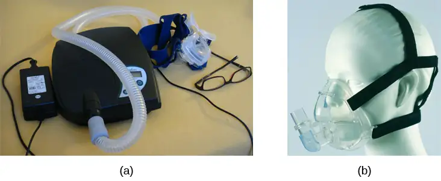
Sids¶
In sudden infant death syndrome (SIDS) an infant stops breathing during sleep and dies. Infants younger than 12 months appear to be at the highest risk for SIDS, and boys have a greater risk than girls. A number of risk factors have been associated with SIDS including premature birth, smoking within the home, and hyperthermia. There may also be differences in both brain structure and function in infants that die from SIDS (Berkowitz, 2012; Mage & Donner, 2006; Thach, 2005).
The substantial amount of research on SIDS has led to a number of recommendations to parents to protect their children (Figure 4.14). For one, research suggests that infants should be placed on their backs when put down to sleep, and their cribs should not contain any items which pose suffocation threats, such as blankets, pillows or padded crib bumpers (cushions that cover the bars of a crib). Infants should not have caps placed on their heads when put down to sleep in order to prevent overheating, and people in the child’s household should abstain from smoking in the home. Recommendations like these have helped to decrease the number of infant deaths from SIDS in recent years (Mitchell, 2009; Task Force on Sudden Infant Death Syndrome, 2011).
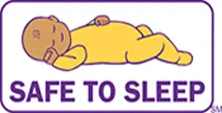
Narcolepsy¶
Unlike the other sleep disorders described in this section, a person with narcolepsy cannot resist falling asleep at inopportune times. These sleep episodes are often associated with cataplexy, which is a lack of muscle tone or muscle weakness, and in some cases involves complete paralysis of the voluntary muscles. This is similar to the kind of paralysis experienced by healthy individuals during REM sleep (Burgess & Scammell, 2012; Hishikawa & Shimizu, 1995; Luppi et al., 2011). Narcoleptic episodes take on other features of REM sleep. For example, around one third of individuals diagnosed with narcolepsy experience vivid, dream-like hallucinations during narcoleptic attacks (Chokroverty, 2010).
Surprisingly, narcoleptic episodes are often triggered by states of heightened arousal or stress. The typical episode can last from a minute or two to half an hour. Once awakened from a narcoleptic attack, people report that they feel refreshed (Chokroverty, 2010). Obviously, regular narcoleptic episodes could interfere with the ability to perform one’s job or complete schoolwork, and in some situations, narcolepsy can result in significant harm and injury (e.g., driving a car or operating machinery or other potentially dangerous equipment).
Generally, narcolepsy is treated using psychomotor stimulant drugs, such as amphetamines (Mignot, 2012). These drugs promote increased levels of neural activity. Narcolepsy is associated with reduced levels of the signaling molecule hypocretin in some areas of the brain (De la Herrán-Arita & Drucker-Colín, 2012; Han, 2012), and the traditional stimulant drugs do not have direct effects on this system. Therefore, it is quite likely that new medications that are developed to treat narcolepsy will be designed to target the hypocretin system.
There is a tremendous amount of variability among sufferers, both in terms of how symptoms of narcolepsy manifest and the effectiveness of currently available treatment options. This is illustrated by McCarty’s (2010) case study of a 50-year-old woman who sought help for the excessive sleepiness during normal waking hours that she had experienced for several years. She indicated that she had fallen asleep at inappropriate or dangerous times, including while eating, while socializing with friends, and while driving her car. During periods of emotional arousal, the woman complained that she felt some weakness in the right side of her body. Although she did not experience any dream-like hallucinations, she was diagnosed with narcolepsy as a result of sleep testing. In her case, the fact that her cataplexy was confined to the right side of her body was quite unusual. Early attempts to treat her condition with a stimulant drug alone were unsuccessful. However, when a stimulant drug was used in conjunction with a popular antidepressant, her condition improved dramatically.
4.5 Substance Use and Abuse¶
Learning Objectives
By the end of this section, you will be able to:
- Describe the diagnostic criteria for substance use disorders
- Identify the neurotransmitter systems impacted by various categories of drugs
- Describe how different categories of drugs affect behavior and experience
While we all experience altered states of consciousness in the form of sleep on a regular basis, some people use drugs and other substances that result in altered states of consciousness as well. This section will present information relating to the use of various psychoactive drugs and problems associated with such use. This will be followed by brief descriptions of the effects of some of the more well-known drugs commonly used today.
Substance Use Disorders¶
The fifth edition of the Diagnostic and Statistical Manual of Mental Disorders, Fifth Edition (DSM-5) is used by clinicians to diagnose individuals suffering from various psychological disorders. Drug use disorders are addictive disorders, and the criteria for specific substance (drug) use disorders are described in DSM-5. A person who has a substance use disorder often uses more of the substance than they originally intended to and continues to use that substance despite experiencing significant adverse consequences. In individuals diagnosed with a substance use disorder, there is a compulsive pattern of drug use that is often associated with both physical and psychological dependence.
Physical dependence involves changes in normal bodily functions—the user will experience withdrawal from the drug upon cessation of use. In contrast, a person who has psychological dependence has an emotional, rather than physical, need for the drug and may use the drug to relieve psychological distress. Tolerance is linked to physiological dependence, and it occurs when a person requires more and more drug to achieve effects previously experienced at lower doses. Tolerance can cause the user to increase the amount of drug used to a dangerous level—even to the point of overdose and death.
Drug withdrawal includes a variety of negative symptoms experienced when drug use is discontinued. These symptoms usually are opposite of the effects of the drug. For example, withdrawal from sedative drugs often produces unpleasant arousal and agitation. In addition to withdrawal, many individuals who are diagnosed with substance use disorders will also develop tolerance to these substances. Psychological dependence, or drug craving, is a recent addition to the diagnostic criteria for substance use disorder in DSM-5. This is an important factor because we can develop tolerance and experience withdrawal from any number of drugs that we do not abuse. In other words, physical dependence in and of itself is of limited utility in determining whether or not someone has a substance use disorder.
Drug Categories¶
The effects of all psychoactive drugs occur through their interactions with our endogenous neurotransmitter systems. Many of these drugs, and their relationships, are shown in Table 4.2. As you have learned, drugs can act as agonists or antagonists of a given neurotransmitter system. An agonist facilitates the activity of a neurotransmitter system, and antagonists impede neurotransmitter activity.
Table 4.2
| Drugs and Their Effects | ||||
|---|---|---|---|---|
| Class of Drug | Examples | Effects on the Body | Effects When Used | Psychologically Addicting? |
| Stimulants | Cocaine, amphetamines (including some ADHD medications such as Adderall), methamphetamines, MDMA (“Ecstasy” or “Molly”) | Increased heart rate, blood pressure, body temperature | Increased alertness, mild euphoria, decreased appetite in low doses. High doses increase agitation, paranoia, can cause hallucinations. Some can cause heightened sensitivity to physical stimuli. High doses of MDMA can cause brain toxicity and death. | Yes |
| Sedative-Hypnotics (“Depressants”) | Alcohol, barbiturates (e.g., secobarbital, pentobarbital), Benzodiazepines (e.g., Xanax) | Decreased heart rate, blood pressure | Low doses increase relaxation, decrease inhibitions. High doses can induce sleep, cause motor disturbance, memory loss, decreased respiratory function, and death. | Yes |
| Opiates | Opium, Heroin, Fentanyl, Morphine, Oxycodone, Vicodin, methadone, and other prescription pain relievers | Decreased pain, pupil constriction, decreased gut motility, decreased respiratory function | Pain relief, euphoria, sleepiness. High doses can cause death due to respiratory depression. | Yes |
| Hallucinogens | Marijuana, LSD, Peyote, mescaline, DMT, dissociative anesthetics including ketamine and PCP | Increased heart rate and blood pressure that may dissipate over time | Mild to intense perceptual changes with high variability in effects based on strain, method of ingestion, and individual differences | Yes |
Alcohol and Other Depressants¶
Ethanol, which we commonly refer to as alcohol, is in a class of psychoactive drugs known as depressants (Figure 4.15). A depressant is a drug that tends to suppress central nervous system activity. Other depressants include barbiturates and benzodiazepines. These drugs share in common their ability to serve as agonists of the gamma-Aminobutyric acid (GABA) neurotransmitter system. Because GABA has a quieting effect on the brain, GABA agonists also have a quieting effect; these types of drugs are often prescribed to treat both anxiety and insomnia.
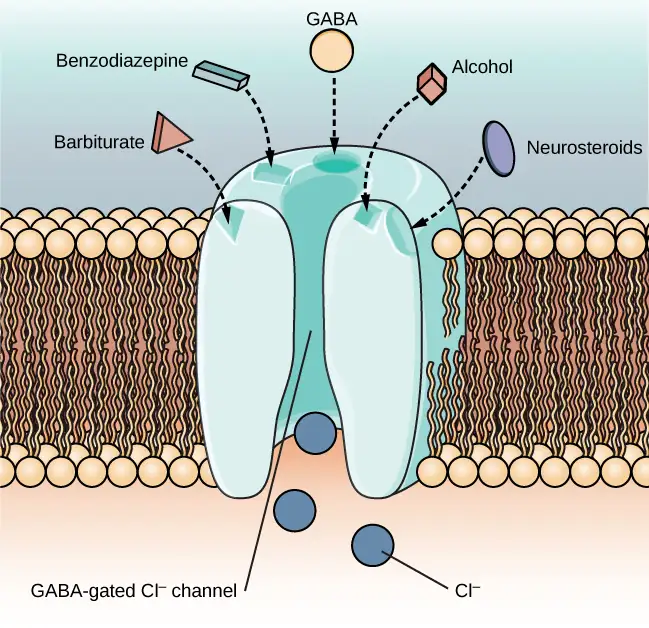
Acute alcohol administration results in a variety of changes to consciousness. At rather low doses, alcohol use is associated with feelings of euphoria. As the dose increases, people report feeling sedated. Generally, alcohol is associated with decreases in reaction time and visual acuity, lowered levels of alertness, and reduction in behavioral control. With excessive alcohol use, a person might experience a complete loss of consciousness and/or difficulty remembering events that occurred during a period of intoxication (McKim & Hancock, 2013). In addition, if a pregnant person consumes alcohol, their infant may be born with a cluster of birth defects and symptoms collectively called fetal alcohol spectrum disorder (FASD) or fetal alcohol syndrome (FAS).
With repeated use of many central nervous system depressants, such as alcohol, a person becomes physically dependent upon the substance and will exhibit signs of both tolerance and withdrawal. Psychological dependence on these drugs is also possible. Therefore, the abuse potential of central nervous system depressants is relatively high.
Drug withdrawal is usually an aversive experience, and it can be a life-threatening process in individuals who have a long history of very high doses of alcohol and/or barbiturates. This is of such concern that people who are trying to overcome addiction to these substances should only do so under medical supervision.
Stimulants¶
Stimulants are drugs that tend to increase overall levels of neural activity. Many of these drugs act as agonists of the dopamine neurotransmitter system. Dopamine activity is often associated with reward and craving; therefore, drugs that affect dopamine neurotransmission often have abuse liability. Drugs in this category include cocaine, amphetamines (including methamphetamine), cathinones (i.e., bath salts), MDMA (ecstasy), nicotine, and caffeine.
Cocaine can be taken in multiple ways. While many users snort cocaine, intravenous injection and inhalation (smoking) are also common. The freebase version of cocaine, known as crack, is a potent, smokable version of the drug. Like many other stimulants, cocaine agonizes the dopamine neurotransmitter system by blocking the reuptake of dopamine in the neuronal synapse.
Dig Deeper: Methamphetamine
Methamphetamine in its smokable form, often called “crystal meth” due to its resemblance to rock crystal formations, is highly addictive. The smokable form reaches the brain very quickly to produce an intense euphoria that dissipates almost as fast as it arrives, prompting users to continuing taking the drug. Users often consume the drug every few hours across days-long binges called "runs," in which the user forgoes food and sleep. The availability of potent and inexpensive forms of methamphetamine, coupled with a lower risk of overdose than with opiate drugs, is making crystal meth a popular choice among drug users today (NIDA, 2019). Using crystal meth poses a number of serious long-term health issues, including dental problems (often called "meth mouth"), skin abrasions caused by excessive scratching, memory loss, sleep problems, violent behavior, paranoia, and hallucinations. Methamphetamine addiction produces an intense craving that is difficult to treat.
Amphetamines have a mechanism of action quite similar to cocaine in that they block the reuptake of dopamine in addition to stimulating its release (Figure 4.16). While amphetamines are often abused, they are also commonly prescribed to people diagnosed with attention deficit hyperactivity disorder (ADHD). It may seem counterintuitive that stimulant medications are prescribed to treat a disorder that involves hyperactivity, but the therapeutic effect comes from increases in neurotransmitter activity within certain areas of the brain associated with impulse control. These brain areas include the prefrontal cortex and basal ganglia.
![An illustration of a presynaptic cell and a postsynaptic cell shows these cells’ interactions with cocaine and dopamine molecules. The presynaptic cell contains two cylinder-shaped channels, one on each side near where it faces the postsynaptic cell. The postsynaptic cell contains several receptors, side-by-side across the area that faces the presynaptic cell. In the space between the two cells, there are both cocaine and dopamine molecules. One of the cocaine molecules attaches to one of the presynaptic cell’s channels. This cocaine molecule is labeled “bound cocaine.” An X-shape is shown over the top of the bound cocaine and the channel to indicate that the cocaine does not enter the presynaptic cell. A dopamine molecule is shown inside of the presynaptic cell’s other channel. Arrows connect this dopamine molecule to several others inside of the presynaptic cell. More arrows connect to more dopamine molecules, tracing their paths from the channel into the presynaptic cell, and out into the space between the presynaptic cell and the postsynaptic cell. Arrows extend from two of the dopamine molecules in this in-between space to the postsynaptic cell’s receptors. Only the dopamine molecules are shown binding to the postsynaptic cell’s receptors.](img/cnx-psych-04-05-stimulants.webp)
In recent years, methamphetamine (meth) use has become increasingly widespread. Methamphetamine is a type of amphetamine that can be made from ingredients that are readily available (e.g., medications containing pseudoephedrine, a compound found in many over-the-counter cold and flu remedies). Despite recent changes in laws designed to make obtaining pseudoephedrine more difficult, methamphetamine continues to be an easily accessible and relatively inexpensive drug option (Shukla, Crump, & Chrisco, 2012).
Stimulant users seek a euphoric high, feelings of intense elation and pleasure, especially in those users who take the drug via intravenous injection or smoking. MDMA (3.4-methelynedioxy-methamphetamine, commonly known as "ecstasy" or "Molly") is a mild stimulant with perception-altering effects. It is typically consumed in pill form. Users experience increased energy, feelings of pleasure, and emotional warmth. Repeated use of these stimulants can have significant adverse consequences. Users can experience physical symptoms that include nausea, elevated blood pressure, and increased heart rate. In addition, these drugs can cause feelings of anxiety, hallucinations, and paranoia (Fiorentini et al., 2011). Normal brain functioning is altered after repeated use of these drugs. For example, repeated use can lead to overall depletion among the monoamine neurotransmitters (dopamine, norepinephrine, and serotonin). Depletion of certain neurotransmitters can lead to mood dysphoria, cognitive problems, and other factors. This can lead to people compulsively using stimulants such as cocaine and amphetamines, in part to try to reestablish the person's physical and psychological pre-use baseline. (Jayanthi & Ramamoorthy, 2005; Rothman, Blough, & Baumann, 2007).
Caffeine is another stimulant drug. While it is probably the most commonly used drug in the world, the potency of this particular drug pales in comparison to the other stimulant drugs described in this section. Generally, people use caffeine to maintain increased levels of alertness and arousal. Caffeine is found in many common medicines (such as weight loss drugs), beverages, foods, and even cosmetics (Herman & Herman, 2013). While caffeine may have some indirect effects on dopamine neurotransmission, its primary mechanism of action involves antagonizing adenosine activity (Porkka-Heiskanen, 2011). Adenosine is a neurotransmitter that promotes sleep. Caffeine is an adenosine antagonist, so caffeine inhibits the adenosine receptors, thus decreasing sleepiness and promoting wakefulness.
While caffeine is generally considered a relatively safe drug, high blood levels of caffeine can result in insomnia, agitation, muscle twitching, nausea, irregular heartbeat, and even death (Reissig, Strain, & Griffiths, 2009; Wolt, Ganetsky, & Babu, 2012). In 2012, Kromann and Nielson reported on a case study of a 40-year-old woman who suffered significant ill effects from her use of caffeine. The woman used caffeine in the past to boost her mood and to provide energy, but over the course of several years, she increased her caffeine consumption to the point that she was consuming three liters of soda each day. Although she had been taking a prescription antidepressant, her symptoms of depression continued to worsen and she began to suffer physically, displaying significant warning signs of cardiovascular disease and diabetes. Upon admission to an outpatient clinic for treatment of mood disorders, she met all of the diagnostic criteria for substance dependence and was advised to dramatically limit her caffeine intake. Once she was able to limit her use to less than 12 ounces of soda a day, both her mental and physical health gradually improved. Despite the prevalence of caffeine use and the large number of people who confess to suffering from caffeine addiction, this was the first published description of soda dependence appearing in scientific literature.
Nicotine is highly addictive, and the use of tobacco products is associated with increased risks of heart disease, stroke, and a variety of cancers. Nicotine exerts its effects through its interaction with acetylcholine receptors. Acetylcholine functions as a neurotransmitter in motor neurons. In the central nervous system, it plays a role in arousal and reward mechanisms. Nicotine is most commonly used in the form of tobacco products like cigarettes or chewing tobacco; therefore, there is a tremendous interest in developing effective smoking cessation techniques. To date, people have used a variety of nicotine replacement therapies in addition to various psychotherapeutic options in an attempt to discontinue their use of tobacco products. In general, smoking cessation programs may be effective in the short term, but it is unclear whether these effects persist (Cropley, Theadom, Pravettoni, & Webb, 2008; Levitt, Shaw, Wong, & Kaczorowski, 2007; Smedslund, Fisher, Boles, & Lichtenstein, 2004). Vaping as a means to deliver nicotine is becoming increasingly popular, especially among teens and young adults. Vaping uses battery-powered devices, sometimes called e-cigarettes, that deliver liquid nicotine and flavorings as a vapor. Originally reported as a safe alternative to the known cancer-causing agents found in cigarettes, vaping is now known to be very dangerous and has led to serious lung disease and death in users (Shmerling, 2019).
Opioids¶
An opioid is one of a category of drugs that includes heroin, morphine, methadone, and codeine. Opioids have analgesic properties; that is, they decrease pain. Humans have an endogenous opioid neurotransmitter system—the body makes small quantities of opioid compounds that bind to opioid receptors reducing pain and producing euphoria. Thus, opioid drugs, which mimic this endogenous painkilling mechanism, have an extremely high potential for abuse. Natural opioids, called opiates, are derivatives of opium, which is a naturally occurring compound found in the poppy plant. There are now several synthetic versions of opiate drugs (correctly called opioids) that have very potent painkilling effects, and they are often abused. For example, the National Institutes of Drug Abuse has sponsored research that suggests the misuse and abuse of the prescription pain killers hydrocodone and oxycodone are significant public health concerns (Maxwell, 2006). In 2013, the U.S. Food and Drug Administration recommended tighter controls on their medical use.
Historically, heroin has been a major opioid drug of abuse (Figure 4.17). Heroin can be snorted, smoked, or injected intravenously. Heroin produces intense feelings of euphoria and pleasure, which are amplified when the heroin is injected intravenously. Following the initial "rush," users experience 4–6 hours of "going on the nod," alternating between conscious and semiconscious states. Heroin users often shoot the drug directly into their veins. Some people who have injected many times into their arms will show "track marks," while other users will inject into areas between their fingers or between their toes, so as not to show obvious track marks and, like all abusers of intravenous drugs, have an increased risk for contraction of both tuberculosis and HIV.
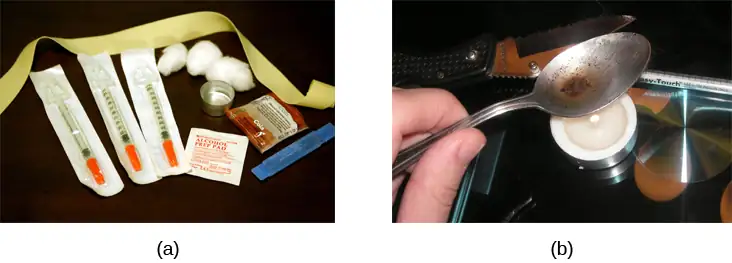
Aside from their utility as analgesic drugs, opioid-like compounds are often found in cough suppressants, anti-nausea, and anti-diarrhea medications. Given that withdrawal from a drug often involves an experience opposite to the effect of the drug, it should be no surprise that opioid withdrawal resembles a severe case of the flu. While opioid withdrawal can be extremely unpleasant, it is not life-threatening (Julien, 2005). Still, people experiencing opioid withdrawal may be given methadone to make withdrawal from the drug less difficult. Methadone is a synthetic opioid that is less euphorigenic than heroin and similar drugs. Methadone clinics help people who previously struggled with opioid addiction manage withdrawal symptoms through the use of methadone. Other drugs, including the opioid buprenorphine, have also been used to alleviate symptoms of opiate withdrawal.
Codeine is an opioid with relatively low potency. It is often prescribed for minor pain, and it is available over-the-counter in some other countries. Like all opioids, codeine does have abuse potential. In fact, abuse of prescription opioid medications is becoming a major concern worldwide (Aquina, Marques-Baptista, Bridgeman, & Merlin, 2009; Casati, Sedefov, & Pfeiffer-Gerschel, 2012).
Everyday Connection: The Opioid Crisis
Few people in the United States remain untouched by the recent opioid epidemic. It seems like everyone knows a friend, family member, or neighbor who has died of an overdose. Opioid addiction reached crisis levels in the United States such that by 2019, an average of 130 people died each day of an opioid overdose (NIDA, 2019).
The crisis actually began in the 1990s, when pharmaceutical companies began mass-marketing pain-relieving opioid drugs like OxyContin with the promise (now known to be false) that they were non-addictive. Increased prescriptions led to greater rates of misuse, along with greater incidence of addiction, even among patients who used these drugs as prescribed. Physiologically, the body can become addicted to opiate drugs in less than a week, including when taken as prescribed. Withdrawal from opioids includes pain, which patients often misinterpret as pain caused by the problem that led to the original prescription, and which motivates patients to continue using the drugs.
The FDA's 2013 recommendation for tighter controls on opiate prescriptions left many patients addicted to prescription drugs like OxyContin unable to obtain legitimate prescriptions. This created a black market for the drug, where prices soared to $80 or more for a single pill. To prevent withdrawal, many people turned to cheaper heroin, which could be bought for $5 a dose or less. To keep heroin affordable, many dealers began adding more potent synthetic opioids including fentanyl and carfentanyl to increase the effects of heroin. These synthetic drugs are so potent that even small doses can cause overdose and death.
Large-scale public health campaigns by the National Institutes of Health and the National Institute of Drug Abuse have led to recent declines in the opioid crisis. These initiatives include increasing access to treatment and recovery services, increasing access to overdose-reversal drugs like Naloxone, and implementing better public health monitoring systems (NIDA, 2019).
Hallucinogens¶
A hallucinogen is one of a class of drugs that results in profound alterations in sensory and perceptual experiences (Figure 4.18). In some cases, users experience vivid visual hallucinations. It is also common for these types of drugs to cause hallucinations of body sensations (e.g., feeling as if you are a giant) and a skewed perception of the passage of time.
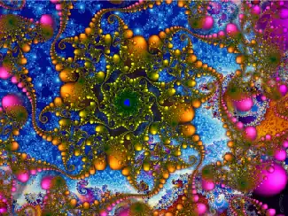
As a group, hallucinogens are incredibly varied in terms of the neurotransmitter systems they affect. Mescaline and LSD are serotonin agonists, and PCP (angel dust) and ketamine (an animal anesthetic) act as antagonists of the NMDA glutamate receptor. In general, these drugs are not thought to possess the same sort of abuse potential as other classes of drugs discussed in this section.
Link to Learning
To learn more about some of the most commonly abused prescription and street drugs, check out the Commonly Abused Drugs Chart and the Commonly Abused Prescription Drugs Chart from the National Institute on Drug Abuse.
Dig Deeper: Medical Marijuana
The decade from 2010–2019 brought many changes in laws regarding marijuana. While the possession and use of marijuana remains illegal in many states, it is now legal to possess limited quantities of marijuana for recreational use in eleven states: Alaska, California, Colorado, Illinois, Maine, Massachusetts, Michigan, Nevada, Oregon, Vermont, and Washington. Medical marijuana is legal in over half of the United States and in the District of Columbia (Figure 4.19). Medical marijuana is marijuana that is prescribed by a doctor for the treatment of a health condition. For example, people who undergo chemotherapy will often be prescribed marijuana to stimulate their appetites and prevent excessive weight loss resulting from the side effects of chemotherapy treatment. Marijuana may also have some promise in the treatment of a variety of medical conditions (Mather, Rauwendaal, Moxham-Hall, & Wodak, 2013; Robson, 2014; Schicho & Storr, 2014).
While medical marijuana laws have been passed on a state-by-state basis, federal laws still classify this as an illicit substance, making conducting research on the potentially beneficial medicinal uses of marijuana problematic. There is quite a bit of controversy within the scientific community as to the extent to which marijuana might have medicinal benefits due to a lack of large-scale, controlled research (Bostwick, 2012). As a result, many scientists have urged the federal government to allow for relaxation of current marijuana laws and classifications in order to facilitate a more widespread study of the drug’s effects (Aggarwal et al., 2009; Bostwick, 2012; Kogan & Mechoulam, 2007).
Until recently, the United States Department of Justice routinely arrested people involved and seized marijuana used in medicinal settings. In the latter part of 2013, however, the United States Department of Justice issued statements indicating that they would not continue to challenge state medical marijuana laws. This shift in policy may be in response to the scientific community’s recommendations and/or reflect changing public opinion regarding marijuana.
4.6 Other States of Consciousness¶
Learning Objectives
By the end of this section, you will be able to:
- Define hypnosis and meditation
- Understand the similarities and differences of hypnosis and meditation
Our states of consciousness change as we move from wakefulness to sleep. We also alter our consciousness through the use of various psychoactive drugs. This final section will consider hypnotic and meditative states as additional examples of altered states of consciousness experienced by some individuals.
Hypnosis¶
Hypnosis is a state of extreme self-focus and attention in which minimal attention is given to external stimuli. In the therapeutic setting, a clinician may use relaxation and suggestion in an attempt to alter the thoughts and perceptions of a patient. For individuals who are especially open to the power of suggestion, hypnosis can prove to be a very effective technique, and brain imaging studies have demonstrated that hypnotic states are associated with global changes in brain functioning (Del Casale et al., 2012; Guldenmund, Vanhaudenhuyse, Boly, Laureys, & Soddu, 2012).
Historically, hypnosis has been viewed with some suspicion because of its portrayal in popular media and entertainment (Figure 4.20). Therefore, it is important to make a distinction between hypnosis as an empirically based therapeutic approach versus as a form of entertainment. Hypnosis is conducted by trained professionals, with consenting clients, often in the context of ongoing therapy. While hypnosis may be useful in enhancing memory or a skill, such enhancements are very modest in nature (Raz, 2011).
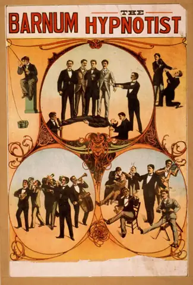
How exactly does a hypnotist bring a participant to a state of hypnosis? While there are variations, there are four parts that appear consistent in bringing people into the state of suggestibility associated with hypnosis (National Research Council, 1994). These components include:
- The participant is guided to focus on one thing, such as the hypnotist’s words or a ticking watch.
- The participant is made comfortable and is directed to be relaxed and sleepy.
- The participant is told to be open to the process of hypnosis, trust the hypnotist and let go.
- The participant is encouraged to use their imagination.
These steps are conducive to being open to the heightened suggestibility of hypnosis.
People vary in terms of their ability to be hypnotized, but a review of available research suggests that most people are at least moderately hypnotizable (Kihlstrom, 2013). Hypnosis in conjunction with other techniques is used for a variety of therapeutic purposes and has shown to be at least somewhat effective for pain management, treatment of depression and anxiety, smoking cessation, and weight loss (Alladin, 2012; Elkins, Johnson, & Fisher, 2012; Golden, 2012; Montgomery, Schnur, & Kravits, 2012).
How does hypnosis work? Two theories attempt to answer this question: One theory views hypnosis as dissociation and the other theory views it as the performance of a social role. According to the dissociation view, hypnosis is effectively a dissociated state of consciousness, much like our earlier example where you may drive to work, but you are only minimally aware of the process of driving because your attention is focused elsewhere. This theory is supported by Ernest Hilgard’s research into hypnosis and pain. In Hilgard’s experiments, he induced participants into a state of hypnosis, and placed their arms into ice water. Participants were told they would not feel pain, but they could press a button if they did; while they reported not feeling pain, they did, in fact, press the button, suggesting a dissociation of consciousness while in the hypnotic state (Hilgard & Hilgard, 1994).
Taking a different approach to explain hypnosis, the social-cognitive theory of hypnosis sees people in hypnotic states as performing the social role of a hypnotized person. As you will learn when you study social roles, people’s behavior can be shaped by their expectations of how they should act in a given situation. Some view a hypnotized person’s behavior not as an altered or dissociated state of consciousness, but as their fulfillment of the social expectations for that role (Coe, 2009; Coe & Sarbin, 1966).
Meditation¶
Meditation is the act of focusing on a single target (such as the breath or a repeated sound) to increase awareness of the moment. While hypnosis is generally achieved through the interaction of a therapist and the person being treated, an individual can perform meditation alone. Often, however, people wishing to learn to meditate receive some training in techniques to achieve a meditative state.
Although there are a number of different techniques in use, the central feature of all meditation is clearing the mind in order to achieve a state of relaxed awareness and focus (Chen et al., 2013; Lang et al., 2012). Mindfulness meditation has recently become popular. In the variation of mindful meditation, the meditator’s attention is focused on some internal process or an external object (Zeidan, Grant, Brown, McHaffie, & Coghill, 2012).
Meditative techniques have their roots in religious practices (Figure 4.21), but their use has grown in popularity among practitioners of alternative medicine. Research indicates that meditation may help reduce blood pressure, and the American Heart Association suggests that meditation might be used in conjunction with more traditional treatments as a way to manage hypertension, although there is not sufficient data for a recommendation to be made (Brook et al., 2013). Like hypnosis, meditation also shows promise in stress management, sleep quality (Caldwell, Harrison, Adams, Quin, & Greeson, 2010), treatment of mood and anxiety disorders (Chen et al., 2013; Freeman et al., 2010; Vøllestad, Nielsen, & Nielsen, 2012), and pain management (Reiner, Tibi, & Lipsitz, 2013).
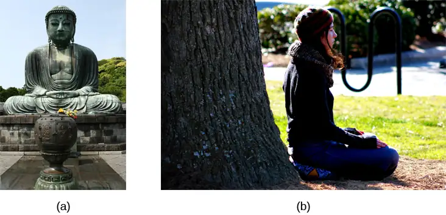
Link to Learning
Feeling stressed? Think meditation might help? Watch this instructional video about using Buddhist meditation techniques to alleviate stress to learn more.
Link to Learning
Watch this video about the results of a brain imaging study in individuals who underwent specific mindfulness meditative techniques to learn more.
Chapter Review¶
Key Terms¶
- alpha wave
- type of brain wave characteristic during the early part of NREM stage 1 sleep, which has fairly low amplitude and a frequency of 8–12 Hz
- beta wave
- type of brain wave characteristic during wakefulness, which has a very low amplitude and a frequency of 13–30 Hz
- biological rhythm
- internal cycle of biological activity
- cataplexy
- lack of muscle tone or muscle weakness, and in some cases complete paralysis of the voluntary muscles
- central sleep apnea
- sleep disorder with periods of interrupted breathing due to a disruption in signals sent from the brain that regulate breathing
- circadian rhythm
- biological rhythm that occurs over approximately 24 hours
- codeine
- opiate with relatively low potency often prescribed for minor pain
- cognitive-behavioral therapy
- psychotherapy that focuses on cognitive processes and problem behaviors that is sometimes used to treat sleep disorders such as insomnia
- collective unconscious
- theoretical repository of information shared by all people across cultures, as described by Carl Jung
- consciousness
- awareness of internal and external stimuli
- continuous positive airway pressure (CPAP)
- device used to treat sleep apnea; includes a mask that fits over the sleeper’s nose and mouth, which is connected to a pump that pumps air into the person’s airways, forcing them to remain open
- delta wave
- type of brain wave characteristic during stage 3 NREM sleep, which has a high amplitude and low frequency of less than 3 Hz
- depressant
- drug that tends to suppress central nervous system activity
- euphoric high
- feelings of intense elation and pleasure from drug use
- evolutionary psychology
- discipline that studies how universal patterns of behavior and cognitive processes have evolved over time as a result of natural selection
- hallucinogen
- one of a class of drugs that results in profound alterations in sensory and perceptual experiences, often with vivid hallucinations
- homeostasis
- tendency to maintain a balance, or optimal level, within a biological system
- hypnosis
- state of extreme self-focus and attention in which minimal attention is given to external stimuli
- insomnia
- consistent difficulty in falling or staying asleep for at least three nights a week over a month’s time
- jet lag
- collection of symptoms brought on by travel from one time zone to another that results from the mismatch between our internal circadian cycles and our environment
- K-complex
- very high amplitude pattern of brain activity associated with stage 2 sleep that may occur in response to environmental stimuli
- latent content
- hidden meaning of a dream, per Sigmund Freud’s view of the function of dreams
- lucid dream
- people become aware that they are dreaming and can control the dream’s content
- manifest content
- storyline of events that occur during a dream, per Sigmund Freud’s view of the function of dreams
- meditation
- clearing the mind in order to achieve a state of relaxed awareness and focus
- melatonin
- hormone secreted by the endocrine gland that serves as an important regulator of the sleep-wake cycle
- meta-analysis
- study that combines the results of several related studies
- methadone
- synthetic opioid that is less euphorigenic than heroin and similar drugs; used to manage withdrawal symptoms in opiate users
- methadone clinic
- uses methadone to treat withdrawal symptoms in opiate users
- methamphetamine
- type of amphetamine that can be made from pseudoephedrine, an over-the-counter drug; widely manufactured and abused
- narcolepsy
- sleep disorder in which the sufferer cannot resist falling to sleep at inopportune times
- night terror
- sleep disorder in which the sleeper experiences a sense of panic and may scream or attempt to escape from the immediate environment
- non-REM (NREM)
- period of sleep outside periods of rapid eye movement (REM) sleep
- obstructive sleep apnea
- sleep disorder defined by episodes when breathing stops during sleep as a result of blockage of the airway
- opiate/opioid
- one of a category of drugs that has strong analgesic properties; opiates are produced from the resin of the opium poppy; includes heroin, morphine, methadone, and codeine
- parasomnia
- one of a group of sleep disorders characterized by unwanted, disruptive motor activity and/or experiences during sleep
- physical dependence
- changes in normal bodily functions that cause a drug user to experience withdrawal symptoms upon cessation of use
- pineal gland
- endocrine structure located inside the brain that releases melatonin
- psychological dependence
- emotional, rather than a physical, need for a drug which may be used to relieve psychological distress
- rapid eye movement (REM) sleep
- period of sleep characterized by brain waves very similar to those during wakefulness and by darting movements of the eyes under closed eyelids
- REM sleep behavior disorder (RBD)
- sleep disorder in which the muscle paralysis associated with the REM sleep phase does not occur; sleepers have high levels of physical activity during REM sleep, especially during disturbing dreams
- restless leg syndrome
- sleep disorder in which the sufferer has uncomfortable sensations in the legs when trying to fall asleep that are relieved by moving the legs
- rotating shift work
- work schedule that changes from early to late on a daily or weekly basis
- sleep
- state marked by relatively low levels of physical activity and reduced sensory awareness that is distinct from periods of rest that occur during wakefulness
- sleep apnea
- sleep disorder defined by episodes during which breathing stops during sleep
- sleep debt
- result of insufficient sleep on a chronic basis
- sleep rebound
- sleep-deprived individuals will experience shorter sleep latencies during subsequent opportunities for sleep
- sleep regulation
- brain’s control of switching between sleep and wakefulness as well as coordinating this cycle with the outside world
- sleep spindle
- rapid burst of high frequency brain waves during stage 2 sleep that may be important for learning and memory
- sleepwalking
- (also, somnambulism) sleep disorder in which the sleeper engages in relatively complex behaviors
- stage 1 sleep
- first stage of sleep; transitional phase that occurs between wakefulness and sleep; the period during which a person drifts off to sleep
- stage 2 sleep
- second stage of sleep; the body goes into deep relaxation; characterized by the appearance of sleep spindles
- stage 3 sleep
- third stage of sleep; deep sleep characterized by low frequency, high amplitude delta waves
- stimulant
- drug that tends to increase overall levels of neural activity; includes caffeine, nicotine, amphetamines, and cocaine
- sudden infant death syndrome (SIDS)
- infant (one year old or younger) with no apparent medical condition suddenly dies during sleep
- suprachiasmatic nucleus (SCN)
- area of the hypothalamus in which the body’s biological clock is located
- theta wave
- type of brain wave characteristic of the end of stage 1 NREM sleep, which has a moderately low amplitude and a frequency of 4–7 Hz
- tolerance
- state of requiring increasing quantities of the drug to gain the desired effect
- wakefulness
- characterized by high levels of sensory awareness, thought, and behavior
- withdrawal
- variety of negative symptoms experienced when drug use is discontinued
Summary¶
4.1 What Is Consciousness?¶
States of consciousness vary over the course of the day and throughout our lives. Important factors in these changes are the biological rhythms, and, more specifically, the circadian rhythms generated by the suprachiasmatic nucleus (SCN). Typically, our biological clocks are aligned with our external environment, and light tends to be an important cue in setting this clock. When people travel across multiple time zones or work rotating shifts, they can experience disruptions of their circadian cycles that can lead to insomnia, sleepiness, and decreased alertness. Bright light therapy has shown to be promising in dealing with circadian disruptions. If people go extended periods of time without sleep, they will accrue a sleep debt and potentially experience a number of adverse psychological and physiological consequences.
4.2 Sleep and Why We Sleep¶
We devote a very large portion of time to sleep, and our brains have complex systems that control various aspects of sleep. Several hormones important for physical growth and maturation are secreted during sleep. While the reason we sleep remains something of a mystery, there is some evidence to suggest that sleep is very important to learning and memory.
4.3 Stages of Sleep¶
The different stages of sleep are characterized by the patterns of brain waves associated with each stage. As a person transitions from being awake to falling asleep, alpha waves are replaced by theta waves. Sleep spindles and K-complexes emerge in stage NREM 2 sleep. NREM stage 3 is described as slow-wave sleep that is marked by a predominance of delta waves. REM sleep involves rapid movements of the eyes, paralysis of voluntary muscles, and dreaming. Both NREM and REM sleep appear to play important roles in learning and memory. Dreams may represent life events that are important to the dreamer. Alternatively, dreaming may represent a state of protoconsciousness, or a virtual reality, in the mind that helps a person during consciousness.
4.4 Sleep Problems and Disorders¶
Many individuals suffer from some type of sleep disorder or disturbance at some point in their lives. Insomnia is a common experience in which people have difficulty falling or staying asleep. Parasomnias involve unwanted motor behavior or experiences throughout the sleep cycle and include RBD, sleepwalking, restless leg syndrome, and night terrors. Sleep apnea occurs when individuals stop breathing during their sleep, and in the case of sudden infant death syndrome, infants will stop breathing during sleep and die. Narcolepsy involves an irresistible urge to fall asleep during waking hours and is often associated with cataplexy and hallucination.
4.5 Substance Use and Abuse¶
Substance use disorder is defined in DSM-5 as a compulsive pattern of drug use despite negative consequences. Both physical and psychological dependence are important parts of this disorder. Alcohol, barbiturates, and benzodiazepines are central nervous system depressants that affect GABA neurotransmission. Cocaine, amphetamine, cathinones, and MDMA are all central nervous stimulants that agonize dopamine neurotransmission, while nicotine and caffeine affect acetylcholine and adenosine, respectively. Opiate drugs serve as powerful analgesics through their effects on the endogenous opioid neurotransmitter system, and hallucinogenic drugs cause pronounced changes in sensory and perceptual experiences. The hallucinogens are variable with regards to the specific neurotransmitter systems they affect.
4.6 Other States of Consciousness¶
Hypnosis is a focus on the self that involves suggested changes of behavior and experience. Meditation involves relaxed, yet focused, awareness. Both hypnotic and meditative states may involve altered states of consciousness that have potential application for the treatment of a variety of physical and psychological disorders.
References¶
References
Aggarwal, S. K., Carter, G. T., Sullivan, M. D., ZumBrunnen, C., Morrill, R., & Mayer, J. D. (2009). Medicinal use of cannabis in the United States: Historical perspectives, current trends, and future directions. Journal of Opioid Management, 5, 153–168.
Alhola, P. & Polo-Kantola, P. (2007). Sleep Deprivation: Impact on cognitive performance. Neuropsychiatric Disease and Treatment, 3, 553–557.
Alladin, A. (2012). Cognitive hypnotherapy for major depressive disorder. The American Journal of Clinical Hypnosis, 54, 275–293.
American Psychiatric Association. (2013). Diagnostic and statistical manual of mental disorders (5th ed.). Author.
Aquina, C. T., Marques-Baptista, A., Bridgeman, P., & Merlin, M. A. (2009). Oxycontin abuse and overdose. Postgraduate Medicine, 121, 163–167.
Arnulf, I. (2012). REM sleep behavior disorder: Motor manifestations and pathophysiology. Movement Disorders, 27, 677–689.
Banks, S., & Dinges, D. F. (2007). Behavioral and physiological consequences of sleep restriction. Journal of Clinical Sleep Medicine, 3, 519–528.
Bartke, A., Sun, L. Y., & Longo, V. (2013). Somatotropic signaling: Trade-offs between growth, reproductive development, and longevity. Physiological Reviews, 93, 571–598.
Berkowitz, C. D. (2012). Sudden infant death syndrome, sudden unexpected infant death, and apparent life-threatening events. Advances in Pediatrics, 59, 183–208.
Berry, R. B., Kryger, M. H., & Massie, C. A. (2011). A novel nasal excitatory positive airway pressure (EPAP) device for the treatment of obstructive sleep apnea: A randomized controlled trial. Sleep, 34, 479–485.
Bixler, E. O., Kales, A., Soldatos, C. R., Kales, J. D., & Healey, S. (1979). Prevalence of sleep disorders in the Los Angeles metropolitan area. American Journal of Psychiatry, 136, 1257–1262.
Bostwick, J. M. (2012). Blurred boundaries: The therapeutics and politics of medical marijuana. Mayo Clinic Proceedings, 87, 172–186.
Brook, R. D., Appel, L. J., Rubenfire, M., Ogedegbe, G., Bisognano, J. D., Elliott, W. K., . . . Rajagopalan, S. (2013). Beyond medications and diet: Alternative approaches to lowering blood pressure: A scientific statement from the American Heart Association. Hypertension, 61, 1360–1383.
Broughton, R., Billings, R., Cartwright, R., Doucette, D., Edmeads, J., Edwardh, M., . . . Turrell, G. (1994). Homicidal somnambulism: A case report. Sleep, 17, 253–264.
Brown, L. K. (2012). Can sleep deprivation studies explain why human adults sleep? Current Opinion in Pulmonary Medicine, 18, 541–545.
Burgess, C. R., & Scammell, T. E. (2012). Narcolepsy: Neural mechanisms of sleepiness and cataplexy. Journal of Neuroscience, 32, 12305–12311.
Cai, D. J., Mednick, S. A., Harrison, E. M., Kanady, J. C., & Mednick, S. C. (2009). REM, not incubation, improves creativity by priming associative networks. Proceedings of the National Academy of Sciences, USA, 106, 10130–10134.
Caldwell, K., Harrison, M., Adams, M., Quin, R. H., & Greeson, J. (2010). Developing mindfulness in college students through movement based courses: Effects on self-regulatory self-efficacy, mood, stress, and sleep quality. Journal of American College Health, 58, 433–442.
Capellini, I., Barton, R. A., McNamara, P., Preston, B. T., & Nunn, C. L. (2008). Phylogenetic analysis of the ecology and evolution of mammalian sleep. Evolution, 62, 1764–1776.
Cartwright, R. (2004). Sleepwalking violence: A sleep disorder, a legal dilemma, and a psychological challenge. American Journal of Psychiatry, 161, 1149–1158.
Cartwright, R., Agargun, M. Y., Kirkby, J., & Friedman, J. K. (2006). Relation of dreams to waking concerns. Psychiatry Research, 141, 261–270.
Casati, A., Sedefov, R., & Pfeiffer-Gerschel, T. (2012). Misuse of medications in the European Union: A systematic review of the literature. European Addiction Research, 18, 228–245.
Chen, K. W., Berger, C. C., Manheimer, E., Forde, D., Magidson, J., Dachman, L., & Lejuez, C. W. (2013). Meditative therapies for reducing anxiety: A systematic review and meta-analysis of randomized controlled trials. Depression and Anxiety, 29, 545–562.
Chokroverty, S. (2010). Overview of sleep & sleep disorders. Indian Journal of Medical Research, 131, 126–140.
Christensen, A., Bentley, G. E., Cabrera, R., Ortega, H. H., Perfito, N., Wu, T. J., & Micevych, P. (2012). Hormonal regulation of female reproduction. Hormone and Metabolic Research, 44, 587–591.
CNN. (1999, June 25). ‘Sleepwalker’ convicted of murder. http://www.cnn.com/US/9906/25/sleepwalker.01/
Coe, W. C. (2009). Hypnosis as role enactment: The role demand variable. American Journal of Clinical Hypnosis, 51(4), 395–398. https://pdfs.semanticscholar.org/5afc/85bd66b3e05c38564963d57965b60955e71a.pdf
Coe, W. C., & Sarbin, T. R. (1966). An experimental demonstration of hypnosis as role enactment. Journal of Abnormal Psychology, 71(6), 400–406. https://psycnet.apa.org/doiLanding?doi=10.1037%2Fh0023920
Cropley, M., Theadom, A., Pravettoni, G., & Webb, G. (2008). The effectiveness of smoking cessation interventions prior to surgery: A systematic review. Nicotine and Tobacco Research, 10, 407–412.
De la Herrán-Arita, A. K., & Drucker-Colín, R. (2012). Models for narcolepsy with cataplexy drug discovery. Expert Opinion on Drug Discovery, 7, 155–164.
Del Casale, A., Ferracuti, S., Rapinesi, C., Serata, D., Sani, G., Savoja, V., . . . Girardi, P. (2012). Neurocognition under hypnosis: Findings from recent functional neuroimaging studies. International Journal of Clinical and Experimental Hypnosis, 60, 286–317.
Elkins, G., Johnson, A., & Fisher, W. (2012). Cognitive hypnotherapy for pain management. The American Journal of Clinical Hypnosis, 54, 294–310.
Ellenbogen, J. M., Hu, P. T., Payne, J. D., Titone, D., & Walker, M. P. (2007). Human relational memory requires time and sleep. Proceedings of the National Academy of Sciences, USA, 104, 7723–7728.
Fenn, K. M., Nusbaum, H. C., & Margoliash, D. (2003). Consolidation during sleep of perceptual learning of spoken language. Nature, 425, 614–616.
Ferini-Strambi, L. (2011). Does idiopathic REM sleep behavior disorder (iRBD) really exist? What are the potential markers of neurodegeneration in iRBD? Sleep Medicine, 12(2 Suppl.), S43–S49.
Fiorentini, A., Volonteri, L.S., Dragogna, F., Rovera, C., Maffini, M., Mauri, M. C., & Altamura, C. A. (2011). Substance-induced psychoses: A critical review of the literature. Current Drug Abuse Reviews, 4, 228–240.
Fogel, S. M., & Smith, C. T. (2011). The function of the sleep spindle: A physiological index of intelligence and a mechanism for sleep-dependent memory consolidation. Neuroscience and Biobehavioral Reviews, 35, 1154–1165.
Frank, M. G. (2006). The mystery of sleep function: Current perspectives and future directions. Reviews in the Neurosciences, 17, 375–392.
Freeman, M. P., Fava, M., Lake, J., Trivedi, M. H., Wisner, K. L., & Mischoulon, D. (2010). Complementary and alternative medicine in major depressive disorder: The American Psychiatric Association task force report. The Journal of Clinical Psychiatry, 71, 669–681.
Gold, D. R., Rogacz, S. R., Bock, N., Tosteson, T. D., Baum, T. M., Speizer, F. M., & Czeisler, C. A. (1992). Rotating shift work, sleep, and accidents related to sleepiness in hospital nurses. American Journal of Public Health, 82, 1011–1014.
Golden, W. L. (2012). Cognitive hypnotherapy for anxiety disorders. The American Journal of Clinical Hypnosis, 54, 263–274.
Gómez, R. L., Bootzin, R. R., & Nadel, L. (2006). Naps promote abstraction in language-learning infants. Psychological Science, 17, 670–674.
Guilleminault, C., Kirisoglu, C., Bao, G., Arias, V., Chan, A., & Li, K. K. (2005). Adult chronic sleepwalking and its treatment based on polysomnography. Brain, 128, 1062–1069.
Guldenmund, P., Vanhaudenhuyse, A., Boly, M., Laureys, S., & Soddu, A. (2012). A default mode of brain function in altered states of consciousness. Archives Italiennes de Biologie, 150, 107–121.
Halász, P. (1993). Arousals without awakening—Dynamic aspect of sleep. Physiology and Behavior, 54, 795–802.
Han, F. (2012). Sleepiness that cannot be overcome: Narcolepsy and cataplexy. Respirology, 17, 1157–1165.
Hardeland, R., Pandi-Perumal, S. R., & Cardinali, D. P. (2006). Melatonin. International Journal of Biochemistry & Cell Biology, 38, 313–316.
Henry, D., & Rosenthal, L. (2013). “Listening for his breath:” The significance of gender and partner reporting on the diagnosis, management, and treatment of obstructive sleep apnea. Social Science & Medicine, 79, 48–56.
Hicks, R. A., Fernandez, C., & Pellegrini, R. J. (2001). The changing sleep habits of university students: An update. Perceptual and Motor Skills, 93, 648.
Hicks, R. A., Johnson, C., & Pellegrini, R. J. (1992). Changes in the self-reported consistency of normal habitual sleep duration of college students (1978 and 1992). Perceptual and Motor Skills, 75, 1168–1170.
Hilgard, E. R., & Hilgard, J. R. (1994). Hypnosis in the Relief of Pain. Brunner/Mazel.
Hishikawa, Y., & Shimizu, T. (1995). Physiology of REM sleep, cataplexy, and sleep paralysis. Advances in Neurology, 67, 245–271.
Herman, A., & Herman, A. P. (2013). Caffeine’s mechanism of action and its cosmetic use. Skin Pharmacology and Physiology, 26, 8–14.
Hobson, J. A. (2002). Dreaming: An introduction to the science of sleep. Oxford University Press.
Hobson, J. A. (2009). REM sleep and dreaming: Towards a theory of protoconsciousness. Nature Reviews Neuroscience, 10, 803–814.
Horikawa,T., Tamaki, M., Miyawaki, Y. & Kamitani, Y. (2013). Neural Decoding of Visual Imagery During Sleep. Science, 340(6132), 639–642. doi:10.1126/science.1234330
Hossain, J. L., & Shapiro, C. M. (2002). The prevalence, cost implications, and management of sleep disorders: An overview. Sleep and Breathing, 6, 85–102.
Huang, L. B., Tsai, M. C., Chen, C. Y., & Hsu, S. C. (2013). The effectiveness of light/dark exposure to treat insomnia in female nurses undertaking shift work during the evening/night shift. Journal of Clinical Sleep Medicine, 9, 641–646.
Huber, R., Ghilardi, M. F., Massimini, M., & Tononi, G. (2004). Local sleep and learning. Nature, 430, 78–81.
Jayanthi, L. D., & Ramamoorthy, S. (2005). Regulation of monoamine transporters: Influence of psychostimulants and therapeutic antidepressants. The AAPS Journal, 7, E728–738.
Julien, R. M. (2005). Opioid analgesics. In A primer of drug action: A comprehensive guide to the actions, uses, and side effects of psychoactive drugs (pp. 461–500). Worth.
Kihlstrom, J. F. (2013). Neuro-hypnotism: Prospects for hypnosis and neuroscience. Cortex, 49, 365–374.
Killgore, W. D. S., Killgore, D. B., Day, L. M., Li, C., Kamimori, G. H., & Balkin, T. J. (2007). The effects of 53 hours of sleep deprivation on moral judgment. Sleep: Journal of Sleep and Sleep Disorders Research, 30(3), 345–352. https://academic.oup.com/sleep/article/30/3/345/2708190
Killgore, W. D. S., & Weber, M. (2014). Sleep deprivation and cognitive performance. In M. T. Bianchi (Ed.), Sleep deprivation and disease: Effects on the body, brain and behavior. (pp. 209–229). Springer Science + Business Media. https://link.springer.com/chapter/10.1007%2F978-1-4614-9087-6_16
Klein, D. C., Moore, R. Y., & Reppert, S. M. (Eds.). (1991). Suprachiasmatic nucleus: The mind’s clock. Oxford University Press.
Kogan, N. M., & Mechoulam, R. (2007). Cannabinoids in health and disease. Dialogues in Clinical Neuroscience, 9, 413–430.
Kromann, C. B., & Nielson, C. T. (2012). A case of cola dependency in a woman with recurrent depression. BMC Research Notes, 5, 692.
LaBerge, S. (1990). Lucid dreaming: Psychophysiological studies of consciousness during REM sleep. In R. R. Bootzen, J. F. Kihlstrom, & D. L. Schacter (Eds.), Sleep and cognition (pp. 109–126). American Psychological Association.
Lang, A. J., Strauss, J. L., Bomeya, J., Bormann, J. E., Hickman, S. D., Good, R. C., & Essex, M. (2012). The theoretical and empirical basis for meditation as an intervention for PTSD. Behavior Modification, 36, 759–786.
Lesku, J. A., Roth, T. C., 2nd, Amlaner, C. J., & Lima, S. L. (2006). A phylogenetic analysis of sleep architecture in mammals: The integration of anatomy, physiology, and ecology. The American Naturalist, 168, 441–453.
Levitt, C., Shaw, E., Wong, S., & Kaczorowski, J. (2007). Systematic review of the literature on postpartum care: Effectiveness of interventions for smoking relapse prevention, cessation, and reduction in postpartum women. Birth, 34, 341–347.
Luppi, P. H., Clément, O., Sapin, E., Gervasoni, D., Peyron, C., Léger, L., . . . Fort, P. (2011). The neuronal network responsible for paradoxical sleep and its dysfunctions causing narcolepsy and rapid eye movement (REM) behavior disorder. Sleep Medicine Reviews, 15, 153–163.
Mage, D. T., & Donner, M. (2006). Female resistance to hypoxia: Does it explain the sex difference in mortality rates? Journal of Women’s Health, 15, 786–794.
Mahowald, M. W., & Schenck, C. H. (2000). Diagnosis and management of parasomnias. Clinical Cornerstone, 2, 48–54.
Mahowald, M. W., Schenck, C. H., & Cramer Bornemann, M. A. (2005). Sleep-related violence. Current Neurology and Neuroscience Reports, 5, 153–158.
Mayo Clinic. (n.d.). Sleep terrors (night terrors). http://www.mayoclinic.org/diseases-conditions/night-terrors/basics/treatment/con-20032552
Mather, L. E., Rauwendaal, E. R., Moxham-Hall, V. L., & Wodak, A. D. (2013). (Re)introducing medical cannabis. The Medical Journal of Australia, 199, 759–761.
Maxwell, J. C. (2006). Trends in the abuse of prescription drugs. Gulf Coast Addiction Technology Transfer Center. http://asi.nattc.org/userfiles/file/GulfCoast/PrescriptionTrends_Web.pdf
McCarty, D. E. (2010). A case of narcolepsy with strictly unilateral cataplexy. Journal of Clinical Sleep Medicine, 15, 75–76.
McDaid, C., Durée, K. H., Griffin, S. C., Weatherly, H. L., Stradling, J. R., Davies, R. J., . . . Westwood, M. E. (2009). A systematic review of continuous positive airway pressure for obstructive sleep apnoea-hypopnoea syndrome. Sleep Medicine Reviews, 13, 427–436.
McKim, W. A., & Hancock, S. D. (2013). Drugs and behavior: An introduction to behavioral pharmacology, 7th edition. Pearson.
Mignot, E. J. M. (2012). A practical guide to the therapy of narcolepsy and hypersomnia syndromes. Neurotherapeutics, 9, 739–752.
Miller, N. L., Shattuck, L. G., & Matsangas, P. (2010). Longitudinal study of sleep patterns of United States Military Academy cadets. Sleep, 33, 1623–1631.
Mitchell, E. A. (2009). SIDS: Past, present and future. Acta Paediatrica, 98, 1712–1719.
Montgomery, G. H., Schnur, J. B., & Kravits, K. (2012). Hypnosis for cancer care: Over 200 years young. CA: A Cancer Journal for Clinicians, 63, 31–44.
National Institute on Drug Abuse. (2019, January). Opioid Overdose Crisis. NIDA. https://www.drugabuse.gov/drugs-abuse/opioids/opioid-overdose-crisis
National Institute on Drug Abuse. (2019, October). Methamphetamine: Overview. NIDA. https://www.drugabuse.gov/publications/research-reports/methamphetamine/overview
National Institutes of Health. (n.d.). Information about sleep. http://science.education.nih.gov/supplements/nih3/sleep/guide/info-sleep.htm
National Research Council. (1994). Learning, remembering, believing: Enhancing human performance. The National Academies Press.
National Sleep Foundation. (n.d.). How much sleep do we really need? http://sleepfoundation.org/how-sleep-works/how-much-sleep-do-we-really-need
Ohayon, M. M. (1997). Prevalence of DSM-IV diagnostic criteria of insomnia: Distinguishing insomnia related to mental disorders from sleep disorders. Journal of Psychiatric Research, 31, 333–346.
Ohayon, M. M. (2002). Epidemiology of insomnia: What we know and what we still need to learn. Sleep Medicine Reviews, 6, 97–111.
Ohayon, M. M., Carskadon, M. A., Guilleminault, C., & Vitiello, M. V. (2004). Meta-analysis of quantitative sleep parameters from childhood to old age in healthy individuals: Developing normative sleep values across the human lifespan. Sleep, 27, 1255–1273.
Ohayon, M. M., & Roth, T. (2002). Prevalence of restless legs syndrome and periodic limb movement disorder in the general population. Journal of Psychosomatic Research, 53, 547–554.
Poe, G. R., Walsh, C. M., & Bjorness, T. E. (2010). Cognitive neuroscience of sleep. Progress in Brain Research, 185, 1–19.
Porkka-Heiskanen, T. (2011). Methylxanthines and sleep. Handbook of Experimental Pharmacology, 200, 331–348.
Presser, H. B. (1995). Job, family, and gender: Determinants of nonstandard work schedules among employed Americans in 1991. Demography, 32, 577–598.
Pressman, M. R. (2007). Disorders of arousal from sleep and violent behavior: The role of physical contact and proximity. Sleep, 30, 1039–1047.
Provini, F., Tinuper, P., Bisulli, F., & Lagaresi, E. (2011). Arousal disorders. Sleep Medicine, 12(2 Suppl.), S22–S26.
Rattenborg, N. C., Lesku, J. A., Martinez-Gonzalez, D., & Lima, S. L. (2007). The non-trivial functions of sleep. Sleep Medicine Reviews, 11, 405–409.
Raz, A. (2011). Hypnosis: A twilight zone of the top-down variety: Few have never heard of hypnosis but most know little about the potential of this mind-body regulation technique for advancing science. Trends in Cognitive Sciences, 15, 555–557.
Reiner, K., Tibi, L., & Lipsitz, J. D. (2013). Do mindfulness-based interventions reduce pain intensity? A critical review of the literature. Pain Medicine, 14, 230–242.
Restless Legs Syndrome Foundation. (n.d.). Restless legs syndrome: Causes, diagnosis, and treatment for the patient living with Restless legs syndrome (RSL). www.rls.org
Rial, R. V., Nicolau, M. C., Gamundí, A., Akaârir, M., Aparicio, S., Garau, C., . . . Esteban, S. (2007). The trivial function of sleep. Sleep Medicine Reviews, 11, 311–325.
Reissig, C. J., Strain, E. C., & Griffiths, R. R. (2009). Caffeinated energy drinks—A growing problem. Drug and Alcohol Dependence, 99, 1–10.
Robson, P. J. (2014). Therapeutic potential of cannabinoid medicines. Drug Testing and Analysis, 6, 24–30.
Roth, T. (2007). Insomnia: Definition, prevalence, etiology, and consequences. Journal of Clinical Sleep Medicine, 3(5 Suppl.), S7–S10.
Rothman, R. B., Blough, B. E., & Baumann, M. H. (2007). Dual dopamine/serotonin releasers as potential medications for stimulant and alcohol addictions. The AAPS Journal, 9, E1–10.
Sánchez-de-la-Torre, M., Campos-Rodriguez, F., & Barbé, F. (2012). Obstructive sleep apnoea and cardiovascular disease. The Lancet Respiratory Medicine, 1, 31–72.
Savard, J., Simard, S., Ivers, H., & Morin, C. M. (2005). Randomized study on the efficacy of cognitive-behavioral therapy for insomnia secondary to breast cancer, part I: Sleep and psychological effects. Journal of Clinical Oncology, 23, 6083–6096.
Schicho, R., & Storr, M. (2014). Cannabis finds its way into treatment of Crohn’s disease. Pharmacology, 93, 1–3.
Schmerling, R. H. (2019, September 4). Can Vaping Damage Your Lungs? What we Do and Don't Know. Harvard Health Publishing. https://www.health.harvard.edu/blog/can-vaping-damage-your-lungs-what-we-do-and-dont-know-2019090417734
Shukla, R. K, Crump, J. L., & Chrisco, E. S. (2012). An evolving problem: Methamphetamine production and trafficking in the United States. International Journal of Drug Policy, 23, 426–435.
Siegel, J. M. (2008). Do all animals sleep? Trends in Neuroscience, 31, 208–213.
Siegel, J. M. (2001). The REM sleep-memory consolidation hypothesis. Science, 294, 1058–1063.
Singh, G. K., & Siahpush, M. (2006). Widening socioeconomic inequalities in US life expectancy, 1980–2000. International Journal of Epidemiology, 35, 969–979.
Smedslund, G., Fisher, K. J., Boles, S. M., & Lichtenstein, E. (2004). The effectiveness of workplace smoking cessation programmes: A meta-analysis of recent studies. Tobacco Control, 13, 197–204.
Sofikitis, N., Giotitsas, N., Tsounapi, P., Baltogiannis, D., Giannakis, D., & Pardalidis, N. (2008). Hormonal regulation of spermatogenesis and spermiogenesis. Journal of Steroid Biochemistry and Molecular Biology, 109, 323–330.
Steriade, M., & Amzica, F. (1998). Slow sleep oscillation, rhythmic K-complexes, and their paroxysmal developments. Journal of Sleep Research, 7(1 Suppl.), 30–35.
Stickgold, R. (2005). Sleep-dependent memory consolidation. Nature, 437, 1272–1278.
Stone, K. C., Taylor, D. J., McCrae, C. S., Kalsekar, A., & Lichstein, K. L. (2008). Nonrestorative sleep. Sleep Medicine Reviews, 12, 275–288.
Suchecki, D., Tiba, P. A., & Machado, R. B. (2012). REM sleep rebound as an adaptive response to stressful situations. Frontiers in Neuroscience, 3. doi: 10.3389/fneur.2012.00041
Task Force on Sudden Infant Death Syndrome. (2011). SIDS and other sleep-related infant deaths: Expansion of recommendations for a safe infant sleeping environment. Pediatrics, 128, 1030–1039.
Taillard, J., Philip, P., Coste, O., Sagaspe, P., & Bioulac, B. (2003). The circadian and homeostatic modulation of sleep pressure during wakefulness differs between morning and evening chronotypes. Journal of Sleep Research, 12, 275–282.
Thach, B. T. (2005). The role of respiratory control disorders in SIDS. Respiratory Physiology & Neurobiology, 149, 343–353.
U.S. Food and Drug Administration. (2013, October 24). Statement on Proposed Hydrocodone Reclassification from Janet Woodcock, M.D., Director, Center for Drug Evaluation and Research. http://www.fda.gov/drugs/drugsafety/ucm372089.htm
Vøllestad, J., Nielsen, M. B., & Nielsen, G. H. (2012). Mindfulness- and acceptance-based interventions for anxiety disorders: A systematic review and meta-analysis. The British Journal of Clinical Psychology, 51, 239–260.
Wagner, U., Gais, S., & Born, J. (2001). Emotional memory formation is enhanced across sleep intervals with high amounts of rapid eye movement sleep. Learning & Memory, 8, 112–119.
Wagner, U., Gais, S., Haider, H., Verleger, R., & Born, J. (2004). Sleep improves insight. Nature, 427, 352–355.
Walker, M. P. (2009). The role of sleep in cognition and emotion. Annals of the New York Academy of Sciences, 1156, 168–197.
Waterhouse. J., Fukuda, Y., & Morita, T. (2012). Daily rhythms of the sleep-wake cycle. Journal of Physiological Anthropology, 31(5). doi:10.1186/1880-6805-31-5
Welsh, D. K. Takahashi, J. S., & Kay, S. A. (2010). Suprachiasmatic nucleus: Cell autonomy and network properties. Annual Review of Physiology, 72, 551–577.
West, S., Boughton, M., & Byrnes, M. (2009). Juggling multiple temporalities: The shift work story of mid-life nurses. Journal of Nursing Management, 17, 110–119.
White, D. P. (2005). Pathogenesis of obstructive and central sleep apnea. American Journal of Respiratory and Critical Care Medicine, 172, 1363–1370.
Wickens, C. D., Hutchins, S. D., Laux, L., & Sebok, A. (2015). The impact of sleep disruption on complex cognitive tasks: A meta-analysis. Human Factors, 57(6), 930–946. https://journals.sagepub.com/doi/10.1177/0018720815571935
Williams, J., Roth, A., Vatthauer, K., & McCrae, C. S. (2013). Cognitive behavioral treatment of insomnia. Chest, 143, 554–565.
Williamson, A. M., & Feyer, A. M. (2000). Moderate sleep deprivation produces impairments in cognitive and motor performance equivalent to legally prescribed levels of alcohol intoxication. Occupational and Environmental Medicine, 57, 649–655.
Wolt, B. J., Ganetsky, M., & Babu, K. M. (2012). Toxicity of energy drinks. Current Opinion in Pediatrics, 24, 243–251.
Zangini, S., Calandra-Buonaura, G., Grimaldi, D., & Cortelli, P. (2011). REM behaviour disorder and neurodegenerative diseases. Sleep Medicine, 12(2 Suppl.), S54–S58.
Zeidan, F., Grant, J. A., Brown, C. A., McHaffie, J. G., & Coghill, R. C. (2012). Mindfulness meditation-related pain relief: Evidence for unique brain mechanisms in the regulation of pain. Neuroscience Letters, 520, 165–173.
Review Questions¶
4.1 What Is Consciousness?¶
1. The body’s biological clock is located in the ________.
- hippocampus
- thalamus
- hypothalamus
- pituitary gland
Answer
C
2. ________ occurs when there is a chronic deficiency in sleep.
- jet lag
- rotating shift work
- circadian rhythm
- sleep debt
Answer
D
3. ________ cycles occur roughly once every 24 hours.
- biological
- circadian
- rotating
- conscious
Answer
B
4. ________ is one way in which people can help reset their biological clocks.
- Light-dark exposure
- coffee consumption
- alcohol consumption
- napping
Answer
A
4.2 Sleep and Why We Sleep¶
5. Growth hormone is secreted by the ________ while we sleep.
- pineal gland
- thyroid
- pituitary gland
- pancreas
Answer
C
6. The ________ plays a role in controlling slow-wave sleep.
- hypothalamus
- thalamus
- pons
- both a and b
Answer
D
7. ________ is a hormone secreted by the pineal gland that plays a role in regulating biological rhythms and immune function.
- growth hormone
- melatonin
- LH
- FSH
Answer
B
8. ________ appears to be especially important for enhanced performance on recently learned tasks.
- melatonin
- slow-wave sleep
- sleep deprivation
- growth hormone
Answer
B
4.3 Stages of Sleep¶
9. ________ is(are) described as slow-wave sleep.
- NREM stage 1 sleep
- NREM stage 2 sleep
- NREM stage 3 sleep
- REM sleep
Answer
C
10. Sleep spindles and K-complexes are most often associated with ________ sleep.
- NREM stage 1 sleep
- NREM stage 2 sleep
- NREM stage 3 sleep
- REM
Answer
B
11. Symptoms of ________ may be improved by REM rebound.
- schizophrenia
- Parkinson’s disease
- depression
- generalized anxiety disorder
Answer
C
12. The ________ content of a dream refers to the true meaning of the dream.
- latent
- manifest
- collective unconscious
- important
Answer
A
4.4 Sleep Problems and Disorders¶
13. ________ is loss of muscle tone or control that is often associated with narcolepsy.
- RBD
- CPAP
- cataplexy
- insomnia
Answer
C
14. An individual may suffer from ________ if there is a disruption in the brain signals that are sent to the muscles that regulate breathing.
- central sleep apnea
- obstructive sleep apnea
- narcolepsy
- SIDS
Answer
A
15. The most common treatment for ________ involves the use of amphetamine-like medications.
- sleep apnea
- RBD
- SIDS
- narcolepsy
Answer
D
16. ________ is another word for sleepwalking.
- insomnia
- somnambulism
- cataplexy
- narcolepsy
Answer
B
4.5 Substance Use and Abuse¶
17. ________ occurs when a drug user requires more and more of a given drug in order to experience the same effects of the drug.
- withdrawal
- psychological dependence
- tolerance
- reuptake
Answer
C
18. Cocaine blocks the reuptake of ________.
- GABA
- glutamate
- acetylcholine
- dopamine
Answer
D
19. ________ refers to drug craving.
- psychological dependence
- antagonism
- agonism
- physical dependence
Answer
A
20. LSD affects ________ neurotransmission.
- dopamine
- serotonin
- acetylcholine
- norepinephrine
Answer
B
4.6 Other States of Consciousness¶
21. ________ is most effective in individuals that are very open to the power of suggestion.
- hypnosis
- meditation
- mindful awareness
- cognitive therapy
Answer
A
22. ________ has its roots in religious practice.
- hypnosis
- meditation
- cognitive therapy
- behavioral therapy
Answer
B
23. Meditation may be helpful in ________.
- pain management
- stress control
- treating the flu
- both a and b
Answer
D
24. Research suggests that cognitive processes, such as learning, may be affected by ________.
- hypnosis
- meditation
- mindful awareness
- progressive relaxation
Answer
A
Critical Thinking Questions¶
4.1 What Is Consciousness?¶
25. Healthcare professionals often work rotating shifts. Why is this problematic? What can be done to deal with potential problems?
Answer
Given that rotating shift work can lead to exhaustion and decreased mental efficiency, individuals working under these conditions are more likely to make mistakes on the job. The implications for this in the health care professions are obvious. Those in health care professions could be educated about the benefits of light-dark exposure to help alleviate such problems.
26. Generally, humans are considered diurnal which means we are awake during the day and asleep during the night. Many rodents, on the other hand, are nocturnal. Why do you think different animals have such different sleep-wake cycles?
Answer
Different species have different evolutionary histories, and they have adapted to their environments in different ways. There are a number of different possible explanations as to why a given species is diurnal or nocturnal. Perhaps humans would be most vulnerable to threats during the evening hours when light levels are low. Therefore, it might make sense to be in shelter during this time. Rodents, on the other hand, are faced with a number of predatory threats, so perhaps being active at night minimizes the risk from predators such as birds that use their visual senses to locate prey.
4.2 Sleep and Why We Sleep¶
27. If theories that assert sleep is necessary for restoration and recovery from daily energetic demands are correct, what do you predict about the relationship that would exist between individuals’ total sleep duration and their level of activity?
Answer
Those individuals (or species) that expend the greatest amounts of energy would require the longest periods of sleep.
28. How could researchers determine if given areas of the brain are involved in the regulation of sleep?
Answer
Researchers could use lesion or brain stimulation techniques to determine how deactivation or activation of a given brain region affects behavior. Furthermore, researchers could use any number of brain imaging techniques like fMRI or CT scans to come to these conclusions.
29. Differentiate the evolutionary theories of sleep and make a case for the one with the most compelling evidence.
Answer
One evolutionary theory of sleep holds that sleep is essential for restoration of resources that are expended during the demands of day-to-day life. A second theory proposes that our sleep patterns evolved as an adaptive response to predatory risks, which increase in darkness. The first theory has little or no empirical support, and the second theory is supported by some, though not all, research.
4.3 Stages of Sleep¶
30. Freud believed that dreams provide important insight into the unconscious mind. He maintained that a dream’s manifest content could provide clues into an individual’s unconscious. What potential criticisms exist for this particular perspective?
Answer
The subjective nature of dream analysis is one criticism. Psychoanalysts are charged with helping their clients interpret the true meaning of a dream. There is no way to refute or confirm whether or not these interpretations are accurate. The notion that “sometimes a cigar is just a cigar” (sometimes attributed to Freud but not definitively shown to be his) makes it clear that there is no systematic, objective system in place for dream analysis.
31. Some people claim that sleepwalking and talking in your sleep involve individuals acting out their dreams. Why is this particular explanation unlikely?
Answer
Dreaming occurs during REM sleep. One of the hallmarks of this particular stage of sleep is the paralysis of the voluntary musculature which would make acting out dreams improbable.
4.4 Sleep Problems and Disorders¶
32. One of the recommendations that therapists will make to people who suffer from insomnia is to spend less waking time in bed. Why do you think spending waking time in bed might interfere with the ability to fall asleep later?
Answer
Answers will vary. One possible explanation might invoke principles of associative learning. If the bed represents a place for socializing, studying, eating, and so on, then it is possible that it will become a place that elicits higher levels of arousal, which would make falling asleep at the appropriate time more difficult. Answers could also consider self-perpetuating cycle referred to when describing insomnia. If an individual is having trouble falling asleep and that generates anxiety, it might make sense to remove him from the context where sleep would normally take place to try to avoid anxiety being associated with that context.
33. How is narcolepsy with cataplexy similar to and different from REM sleep?
Answer
Similarities include muscle atony and the hypnagogic hallucinations associated with narcoleptic episodes. The differences involve the uncontrollable nature of narcoleptic attacks and the fact that these come on in situations that would normally not be associated with sleep of any kind (e.g., instances of heightened arousal or emotionality).
4.5 Substance Use and Abuse¶
34. The negative health consequences of both alcohol and tobacco products are well-documented. A drug like marijuana, on the other hand, is generally considered to be as safe, if not safer than these legal drugs. Why do you think marijuana use continues to be illegal in many parts of the United States?
Answer
One possibility involves the cultural acceptance and long history of alcohol and tobacco use in our society. No doubt, money comes into play as well. Growing tobacco and producing alcohol on a large scale is a well-regulated and taxed process. Given that marijuana is essentially a weed that requires little care to grow, it would be much more difficult to regulate its production. Recent events suggest that cultural attitudes regarding marijuana are changing, and it is quite likely that its illicit status will be adapted accordingly.
35. Why are programs designed to educate people about the dangers of using tobacco products just as important as developing tobacco cessation programs?
Answer
Given that currently available programs designed to help people quit using tobacco products are not necessarily effective in the long term, programs designed to prevent people from using these products in the first place may be the best hope for dealing with the enormous public health concerns associated with tobacco use.
4.6 Other States of Consciousness¶
36. What advantages exist for researching the potential health benefits of hypnosis?
Answer
Healthcare and pharmaceutical costs continue to skyrocket. If alternative approaches to dealing with these problems could be developed that would be relatively inexpensive, then the potential benefits are many.
37. What types of studies would be most convincing regarding the effectiveness of meditation in the treatment for some type of physical or mental disorder?
Answer
Ideally, double-blind experimental trials would be best suited to speak to the effectiveness of meditation. At the very least, some sort of randomized control trial would be very informative.
Personal Application Questions¶
4.1 What Is Consciousness?¶
38. We experience shifts in our circadian clocks in the fall and spring of each year with time changes associated with daylight saving time. Is springing ahead or falling back easier for you to adjust to, and why do you think that is?
39. What do you do to adjust to the differences in your daily schedule throughout the week? Are you running a sleep debt when daylight saving time begins or ends?
4.2 Sleep and Why We Sleep¶
40. Have you (or someone you know) ever experienced significant periods of sleep deprivation because of simple insomnia, high levels of stress, or as a side effect from a medication? What were the consequences of missing out on sleep?
4.3 Stages of Sleep¶
41. Researchers believe that one important function of sleep is to facilitate learning and memory. How does knowing this help you in your college studies? What changes could you make to your study and sleep habits to maximize your mastery of the material covered in class?
4.4 Sleep Problems and Disorders¶
42. What factors might contribute to your own experiences with insomnia?
4.5 Substance Use and Abuse¶
43. Many people experiment with some sort of psychoactive substance at some point in their lives. Why do you think people are motivated to use substances that alter consciousness?
4.6 Other States of Consciousness¶
44. Under what circumstances would you be willing to consider hypnosis and/or meditation as a treatment option? What kind of information would you need before you made a decision to use these techniques?
Adapted from Psychology 2e by OpenStax, licensed under CC BY 4.0. Access the original for free at openstax.org. Changes: converted to the web reading format of The Open Book Project.